x = 100
type(x)<class 'int'>This section provides a brief introduction to programming in Python, covering the basics of the language, essential libraries for data analysis, and best practices for coding. The goal is to equip you with the skills needed to work with Python effectively in the context of artificial intelligence and big data.
Python has become the de facto standard for AI and data science due to its simplicity, readability, and rich ecosystem of specialized libraries. Throughout the course, we will use Python for various tasks, including data manipulation, visualization, statistical analysis, and implementing machine learning algorithms. By the end of this section, you should be comfortable with Python’s core concepts and ready to tackle basic real-world AI challenges.
Note that programming is a skill that cannot be mastered overnight. It requires practice and continuous learning. I encourage you to experiment with the code examples provided in this section and to work through the exercises. Don’t worry if things don’t click immediately; programming fluency develops through repetition and problem-solving.
The material in this section draws from the material developed by Alba Miñano-Mañero and extended by Jesús Villota Miranda, which they kindly prepared for another data science course that I taught at CEMFI.
Python is a high-level, interpreted programming language created by Guido van Rossum and first released in 1991. It emphasizes code readability and simplicity through its clean syntax and use of significant whitespace, making it an ideal language for both beginners and experienced programmers. Python is a general-purpose language that excels across diverse domains—from automation to scientific computing and artificial intelligence. Its extensive standard library and vast ecosystem of third-party packages enable rapid development and prototyping. Today, Python is one of the most popular programming languages worldwide and has become the lingua franca of data science and machine learning, largely due to powerful libraries like NumPy, Pandas, scikit-learn, TensorFlow, and PyTorch.
While languages like R, Julia, and MATLAB, or sometimes even lower-level languages like C++ are used in data science and AI, Python offers distinct advantages for this course:
That said, other languages have their strengths: R, for example, excels in statistical analysis and visualization and Julia offers superior performance for numerical computing. Python strikes the best balance for our purposes: accessible enough for newcomers yet powerful enough for production systems.
For this course, we will primarily use Nuvolos, a cloud-based platform that provides a pre-configured Python environment with all necessary libraries and a VS Code interface. This eliminates installation headaches and ensures everyone has an identical setup. You can access Nuvolos through the link in the sidebar.
However, learning to set up Python locally is a valuable skill for future projects. If you wish to work on your own machine, here are the general steps to install Python and the required packages:
Install Python via Anaconda/Miniconda: Anaconda is a distribution that bundles Python with common data science packages. Miniconda is a lighter version that installs only Python and the conda package manager, allowing you to install packages as needed.
Create a virtual environment: Virtual environments isolate project dependencies, preventing version conflicts between projects. Use conda env create -f https://aibigdata.joelmarbet.com/environment.yml to create the environment required for this course.
Install additional packages: If required, you can install additional packages individually (e.g., conda install numpy).
Set up VSCode: Install Visual Studio Code and add the Python and Jupyter extensions. VSCode provides an excellent development experience with features like code completion, debugging, and integrated notebook support.
Detailed installation instructions on how to install the environment used in this course are available in the “Notes for Local Installation” PDF linked in the sidebar. For troubleshooting or platform-specific issues, consult the documentation or reach out after class or by email.
A good development environment significantly improves your productivity and learning experience. This section covers the main tools you’ll encounter in this course.
VSCode is a free, lightweight, yet powerful code editor that has become a developer favorite for many different programming languages. It combines the simplicity of a text editor with features traditionally found in full IDEs.
Figure 2.1 shows the main components of the VSCode interface:

Note that not all elements are always visible; for example, the Panel is hidden by default and can be toggled as needed.
For Python development, you’ll want to install the following extensions in VSCode:
You can install extensions by clicking on the Extensions icon in the left sidebar and searching for them by name.


We will primarily use VSCode within Nuvolos for this course, but you can also set it up locally following the installation instructions provided earlier. Note that the version on Nuvolos has an additional menu button at the top left, which provides access to menus to open files, settings, and other options. In the local version of VSCode, these options are available in the standard menu bar at the top of the window/screen.
The main way we will interact with Python code in this course is through Jupyter Notebooks. Jupyter Notebooks, as well as the popular Jupyter Lab, are all part of the Jupyter Project which revolves around the provision of tools and standards for interactive computing across different computing languages (Julia, Python, R).
Jupyter Notebooks are interactive documents that combine live code, visualizations, and explanatory text. They’re ideal for exploratory data analysis and prototyping. They allow you to write and execute code in small chunks (cells), see immediate outputs, and document your thought process alongside the code. While Jupyter Notebooks are excellent for exploration and learning, they may not be the best choice for production code or large projects due to challenges with version control and code organization. However, they remain a popular tool in data science and AI for their interactivity and ease of use. We will execute Jupyter Notebooks within VSCode instead of the more traditional browser-based interface. The reason for this choice is to provide a unified development environment where you can seamlessly switch between writing notebooks and scripts, debugging code, and managing files. Furthermore, VSCode integrates well with recent AI-assisted coding tools, which can enhance your productivity.
Figure 2.2 shows an example of a Jupyter notebook opened in VSCode. To work with Jupyter notebooks in VSCode, follow these steps:
.ipynb) or create a new one from the menu (“File” -> “New File” and then select “Jupyter Notebook”).ai-big-data-cemfi as the kernel. You can change the kernel by clicking on the current kernel name (or “Select Kernel”) in the top-right corner of the notebook interface (denoted by number 1 in Figure 2.2). Then, click on “Python Environments” and select ai-big-data-cemfi from the list.If you have done this correctly, you should see ai-big-data-cemfi displayed as the selected kernel as shown in Figure 2.2.

A Jupyter notebook consists of a sequence of cells, which can be of two main types:
These cells can be created from the toolbar at the top of the notebook interface (denoted by number 2 in Figure 2.2) or from the + button appearing under cells when hovering over them. From the toolbar you can also run cells, stop execution, restart the kernel, and perform other notebook-related actions. Cells can also be executed by selecting them and pressing Shift-Enter or by clicking the “Play” button in the toolbar (denoted by number 4 in Figure 2.3). Once you run a cell, the output will appear directly below it (denoted by number 5 in Figure 2.3). Markdown cells can be edited by double-clicking on them, and you can switch between code and markdown cell types using the dropdown menu in the toolbar. Number 2 and 3 in Figure 2.3 show markdown cells that are being edited and rendered, respectively. Number 1 in Figure 2.3 shows a code cell. Note that code cells have “Python” written in the bottom right corner to indicate the language being used.

Another way to write and run Python code is through scripts. Scripts are plain text files with a .py extension that contain Python code. They are executed as a whole, either from the command line or within an IDE like VSCode. They are better suited for larger projects, production code, and automation tasks.

Figure 2.4 shows an example of a Python script opened in VSCode. You can run the entire script by right-clicking anywhere in the editor and selecting “Run Python File in Terminal” or by clicking the “Play” button (denoted by number 1 in Figure 2.4). The output will appear in the integrated terminal at the bottom of the VSCode window.
When to use notebooks:
When to use scripts:
Best Practices:
We will primarily use Jupyter notebooks for in-class exercises and exploratory tasks, but I will provide some Python scripts as examples. Understanding both formats is important for effective Python programming.
Google Colab is a free cloud-based Jupyter notebook environment that requires no setup and provides free access to GPUs. It’s particularly useful for:
Limitations:
If you have trouble installing the environments locally, Google Colab can be a good alternative. To use Colab, simply navigate to colab.research.google.com. There you can create a new notebook or upload an existing one. I will provide links to the notebooks used in this course that you can open directly in Colab if needed. However, Nuvolos is the preferred environment for this course and will give you the best experience.
Python is an interpreted language. By this we mean that the Python interpreter will run a program by executing the source code line-by-line without the need for compilation into machine code beforehand. Furthermore, Python is an Object-Oriented Programming (OOP) language. Everything we define in our code exists within the interpreter as a Python object, meaning it has associated attributes (data) and methods (functions that operate on that data). We will see these concepts in more detail later.
First, let’s have a look at the basics of any programming language. All programs consist of the following
Variables are basic elements of any programming language. They
Python is dynamically typed, meaning you don’t need to declare variable types explicitly. The interpreter infers the type based on the assigned value. For example, the following code creates a variable x and assigns it the integer value 100. The type() function is then used to check the type of the variable.
x = 100
type(x)<class 'int'>The Python interpreter output int, indicating that x is of type integer.
As the example above shows, you can create a variable by simply assigning a value to it using the equals sign (=). What happens under the hood is that Python creates an object in memory to store the value 100 and then creates a reference (the variable name x) that points to that object. When you later use the variable x in your code, Python retrieves the value from the memory location that x references. For example, we can then do computations with x:
y = x + 50
print(y)150Python retrieved the value of x (which is 100), added 50 to it, and assigned the result to the new variable y.
Note that you can reassign variables to new values or even different types. For example, you can change the value of x simply by assigning a new value to it
x = 200
print(x)200Note that now x points to a new object in memory with the value 200. The previous object with the value 100 will be automatically cleaned up by Python’s garbage collector if there are no other references to it. This might not seem important now, but there are some implications of this behavior when working with mutable objects, which we will cover later.
The process of naming variables is an important aspect of programming. Good variable names enhance code readability and maintainability, making it easier for others (and yourself) to understand the purpose of each variable.
For example, consider the following two variable names
a = 25
number_of_students = 25The first variable name, a, is vague and does not convey any information about what it represents. In contrast, number_of_students is descriptive and clearly indicates that the variable holds the count of students. This makes the code more understandable, especially in larger programs where many variables are used.
Python imposes certain rules on how variable names can be constructed:
if, else, while, for, etc.). help(keywords) will show which words are reserved.Variable, variable, and VARIABLE would be considered different variables.In addition to these rules, good practices for naming variables include to
snake_case) for better readability (some programmers use camelCase, but snake_case is preferred in Python)type we will no longer be able to use type to access the type of variables)The following code snippet lists all reserved keywords in Python that cannot be used as variable names
import keyword
for kw in keyword.kwlist:
print(kw)False
None
True
and
as
assert
async
await
break
class
continue
def
del
elif
else
except
finally
for
from
global
if
import
in
is
lambda
nonlocal
not
or
pass
raise
return
try
while
with
yieldMake sure you don’t use any of these words as variable names in your code.
Python has several built-in data types that are commonly used:
int): Whole numbers, e.g., 42, -7float): Numbers with decimal points, e.g., 3.14, -0.001complex): Numbers with real and imaginary parts, e.g., 2 + 3jstr): Sequences of characters enclosed in single or double quotes, e.g., 'Hello, World!', "Python"bool): Logical values representing True or FalseSince Python is dynamically typed, the creation of variables of these types is straightforward, as shown in the following examples:
this_is_int = 5
type(this_is_int)<class 'int'>this_is_float = 3.14
type(this_is_float)<class 'float'>this_is_complex = 2 + 3j
type(this_is_complex)<class 'complex'>this_is_str = "Hello, Python!"
type(this_is_str)<class 'str'>this_is_bool = True
type(this_is_bool)<class 'bool'>Note that boolean values are special in the sense that they are equivalent to integers: True is equivalent to 1 and False is equivalent to 0. This means you can perform arithmetic operations with boolean values, and they will behave like integers in those contexts.
There is another data type called NoneType, which you might encounter. It represents the absence of a value and is created using the None keyword.
this_is_none = None
type(this_is_none)<class 'NoneType'>You can also create more complex data types, which we will cover in the section on data structures.
A key element of programming is manipulating the variables you create. Python supports various basic operations for different data types, including arithmetic operations for numbers, string operations for text, and boolean operations for logical values.
Arithmetic Operations: You can perform arithmetic operations on integers and floats using operators like +, -, *, /, // (floor division), % (modulus), and ** (exponentiation).
a = 10
b = 3sum_result = a + b # Addition
print(sum_result)13diff_result = a - b # Subtraction
print(diff_result)7prod_result = a * b # Multiplication
print(prod_result)30div_result = a / b # Division
print(div_result)3.3333333333333335floor_div_result = a // b # Floor Division
print(floor_div_result)3mod_result = a % b # Modulus
print(mod_result)1exp_result = a ** b # Exponentiation
print(exp_result)1000String Operations: Strings can be concatenated using the + operator and repeated using the * operator.
str1 = "Hello, "
str2 = "World!"
concat_str = str1 + str2 # Concatenation
print(concat_str)Hello, World!Sometimes, you may want to repeat a string multiple times
repeat_str = str1 * 3 # Repetition
print(repeat_str)Hello, Hello, Hello, Another useful operation is string interpolation, which allows you to embed variables within strings. This can be done using f-strings (formatted string literals) by prefixing the string with f and including expressions inside curly braces {}.
name = "Alba"
age = 30
intro_str = f"Her name is {name} and she is {age} years old."
print(intro_str)Her name is Alba and she is 30 years old.Boolean Operations: You can use logical operators like and, or, and not to combine or negate boolean values.
bool1 = True
bool2 = False
and_result = bool1 and bool2 # Logical AND
print(and_result)Falseor_result = bool1 or bool2 # Logical OR
print(or_result)Truenot_result = not bool1 # Logical NOT
print(not_result)FalseTo compare values, you can use comparison operators like == (equal to), != (not equal to), < (less than), > (greater than), <= (less than or equal to), and >= (greater than or equal to).
a = 10
b = 20eq_result = (a == b) # Equal to
print(eq_result)Falseneq_result = (a != b) # Not equal to
print(neq_result)Truelt_result = (a < b) # Less than
print(lt_result)Truegt_result = (a > b) # Greater than
print(gt_result)Falsele_result = (a <= b) # Less than or equal to
print(le_result)Truege_result = (a >= b) # Greater than or equal to
print(ge_result)FalseNote that the result of comparison operations is always a boolean value (True or False). This will be useful when we discuss conditional statements later.
Be careful not to confuse the assignment operator = with the equality comparison operator ==. The single equals sign = assigns a value to a variable, while the double equals sign == checks if two values are equal and returns a boolean result.
We can also combine multiple comparison operations using logical operators. For example, to check if a number is within a certain range, we can use the and operator
num = 15
is_in_range = (num > 10) and (num < 20)
print(is_in_range)TrueThis checks if num is greater than 10 and less than 20, returning True if both conditions are met. Of course, we can also use or to check if at least one condition is met or not to negate a condition.
Functions are reusable blocks of code that perform a specific task. They help organize code, improve readability, and allow for code reuse. In Python, you define a function using the def keyword, followed by the function name and parentheses containing any parameters. For example, here is a simple function that takes two arguments, performs a calculation, and returns the result
def function_name(arg1, arg2):
r3 = arg1 + arg2
return r3Note that the indentation (whitespace at the beginning of a line) is crucial in Python, as it defines the scope of the function. The code block inside the function must be indented consistently. In the example above, two spaces are used for indentation, but tabs or four spaces are also common conventions. VSCode will automatically convert tabs to spaces based on your settings and the convention used in the file.
Suppose we want to create a function that greets a user by their name. We can define such a function as follows
def greet(name):
greeting = f"Hello, {name}!"
return greetingYou can then call the function by passing the required argument
message = greet("Alba")
print(message)Hello, Alba!We could also define the function without a return value and simply print the greeting directly
def greet_print(name):
print(f"Hello, {name}!")You can call this function in the same way
greet_print("Alba")Hello, Alba!We can also define functions with multiple outputs by returning a tuple of values. For example, here is a function that takes two numbers and returns both their sum and product
def sum_and_product(x, y):
sum_result = x + y
product_result = x * y
return sum_result, product_resultYou can call this function and unpack the returned values into separate variables
s, p = sum_and_product(5, 10)
print(f"Sum: {s}, Product: {p}")Sum: 15, Product: 50or you can capture the returned tuple in a single variable
result = sum_and_product(5, 10)
print(f"Result: {result}")Result: (15, 50)You can define functions with multiple return statements to handle different conditions. For example, here is a function that checks if a number is positive, negative, or zero and returns an appropriate message
def check_number(num):
if num > 0:
return "Positive"
elif num < 0:
return "Negative"
else:
return "Zero"You can call this function with different numbers to see the results
print(check_number(10)) # Output: PositivePositiveprint(check_number(-5)) # Output: NegativeNegativeprint(check_number(0)) # Output: ZeroZeroWhen you pass a variable to a function, the function receives a local copy of that value. Modifying this copy inside the function does not affect the original variable outside. However, if you need to modify a variable defined outside the function (a global variable), you must explicitly declare it using the global keyword. The difference between local and global variables is also called the scope of a variable. The following example illustrates the difference
global_var = 10
def edit_input(input_var):
# Access the input variable
print("Input you gave me", input_var)
input_var = input_var + 5 # This modifies the local copy of input_var and not global_var
print("Inside the function - modified input_var:", input_var)
return input_var # Return the modified value
def edit_global(input_var):
global global_var # Make global_var accessible inside the function
# Access the input variable
print("Input you gave me", input_var)
global_var = global_var + input_var # This modifies the global variable
print("Inside the function - modified global_var:", global_var)
return None
# Call the function
edit_input(global_var)Input you gave me 10
Inside the function - modified input_var: 15
15print("Outside the function - global_var:", global_var) Outside the function - global_var: 10# Call the function
edit_global(global_var)Input you gave me 10
Inside the function - modified global_var: 20print("Outside the function - global_var:", global_var) Outside the function - global_var: 20Oftentimes it is better to avoid global variables if possible, as they can lead to code that is harder to understand and maintain. Instead, prefer passing variables as arguments to functions and returning results. For example, if you would like to modify the value of global_var, you could simply assign the returned value of the function to it
global_var = edit_input(global_var)Input you gave me 20
Inside the function - modified input_var: 25print("Outside the function - global_var:", global_var) Outside the function - global_var: 25Functions can also have default arguments, which are used if no value is provided when the function is called. For example, here is a function that greets a user with a default name if none is provided
def greet_with_default(name="Guest"):
print(f"Hello, {name}!")
greet_with_default()Hello, Guest!greet_with_default("Jesus")Hello, Jesus!We used the same function, once without providing an argument (so it uses the default value “Guest”) and once with a specific name (“Jesus”).
We can also use keyword arguments to call functions. This allows us to specify the names of the parameters when calling the function, making it clear what each argument represents. For example
def introduce(name, age):
print(f"My name is {name} and I am {age} years old.")
introduce(name="Alba", age=30)My name is Alba and I am 30 years old.We can even change the order of the arguments when using keyword arguments, as shown above. You can also mix positional and keyword arguments, but positional arguments must come before keyword arguments.
introduce("Alba", age=30) # This worksMy name is Alba and I am 30 years old.#introduce(age=30, "Alba") # This will raise a SyntaxErrorPositional arguments must be provided in the correct order, starting from the first parameter defined in the function. If you try to provide them in the wrong order, Python will raise a TypeError. For example, the following code will raise an error because the first argument is expected to be name, but we intended to provide an integer for age.
#introduce(30, name="Alba") # This will raise a TypeErrorFinally, note that the function needs to be defined before it is called in the code. If you try to call a function before its definition, Python will raise a NameError indicating that the function is not defined.
#test_function() # This will raise a NameError
def test_function():
print("This is a test function.")But the following will work correctly
def test_function():
print("This is a test function.")
test_function() # This will work correctlyThis is a test function.For this reason, function definitions are often placed at the beginning of a script or notebook cell, before any calls to those functions.
Conditional statements allow you to control the flow of your program based on certain conditions. In Python, you can use if, elif, and else statements to execute different blocks of code depending on whether a condition is true or false. We have already seen an example of this in the check_number function above.
In the following example, the do_something() function will only be executed if condition evaluates to True, while do_some_other_thing() will always be executed.
if condition:
do_something()
do_some_other_thing()It is important to note that Python uses indentation to define the scope of code blocks. The code inside the if statement must be indented consistently to indicate that it belongs to that block.
a = 10
if a > 5:
print("a is greater than 5")
print("This line is also part of the if block")a is greater than 5
This line is also part of the if blockprint("This line is outside the if block")This line is outside the if blockYou can also nest if statements within each other to create more complex conditions. For example
a = 10
if a > 5:
if a < 15:
print("a is between 5 and 15")
else:
print("a is greater than or equal to 15")
else:
print("a is less than or equal to 5")a is between 5 and 15Here, we first check if a is greater than 5. If that condition is true, we then check if a is less than 15. Depending on the outcome of these checks, different messages will be printed. Compared to the previous example, we also used an else statement to handle the case where a is not less than 15.
We can also use elif (short for “else if”) to check multiple conditions in a more concise way. For example
a = 10
if a < 5:
print("a is less than 5")
elif a < 15:
print("a is between 5 and 15")
else:
print("a is greater than or equal to 15")a is between 5 and 15To reach the elif block, the first if condition must evaluate to False. If it evaluates to True, the code inside that block will be executed, and the rest of the conditions will be skipped. If none of the conditions are met, the code inside the else block will be executed.
Note that if statements can also be written in a single line using a ternary conditional operator. For example
a = 10
result = "a is greater than 5" if a > 5 else "a is less than or equal to 5"
print(result)a is greater than 5The above code assigns a different string to the variable result based on the condition a > 5. If the condition is true, it assigns “a is greater than 5”; otherwise, it assigns “a is less than or equal to 5”.
Loops allow you to execute a block of code multiple times, which is useful for iterating over collections of data or performing repetitive tasks. In Python, there are two main types of loops: for loops and while loops.
while loops repeatedly execute a block of code as long as a specified condition is true. For example
count = 0
while count < 5:
print("Count is", count)
count += 1 # Increment count by 1Count is 0
Count is 1
Count is 2
Count is 3
Count is 4print("Final count is", count)Final count is 5In this example, the loop will continue to run as long as count is less than 5. Inside the loop, we print the current value of count and then increment it by 1. Once count reaches 5, the condition becomes false, and the loop exits. Note that count += 1 is a shorthand for count = count + 1.
for loops are used to iterate over a sequence (like a list, tuple, or string) or other iterable objects. We will see examples of such objects in the section on data structures. For the moment, let’s look at a simple example of a for loop that iterates over a list of numbers
numbers = [1, 2, 3, 4, 5]
for num in numbers:
print("Number is", num)Number is 1
Number is 2
Number is 3
Number is 4
Number is 5or alternatively, we can use the range() function to generate a sequence of numbers to iterate over
for i in range(5): # Generates numbers from 0 to 4
print("i is:", i)i is: 0
i is: 1
i is: 2
i is: 3
i is: 4We can use the function range also to get a sequence of number to loop over. It follows the syntax range(start, stop, step)
start)stop-step)start + step, start + 2*step, start + 3*step, …for i in range(2, 10, 2): # Generates even numbers from 2 to 8
print("i is", i)i is 2
i is 4
i is 6
i is 8But as mentioned before, for loops can iterate over any iterable object, not just sequences of numbers. For example, we can iterate over the characters in a string
for letter in "Cemfi":
print(letter)C
e
m
f
ior over a list of strings
months_of_year = ["January", "February", "March", "April", "May", "June", "July", "August", "September", "October", "November", "December"]
# Loop through the months and add some summer vibes
for month in months_of_year:
if month == "June":
print(f"Get ready to enjoy the summer break, it's {month}!")
elif month == "July" or month =="August":
print(f"{month} is perfect to find reasons to escape from Madrid")
else:
print(f"Winter is coming")Winter is coming
Winter is coming
Winter is coming
Winter is coming
Winter is coming
Get ready to enjoy the summer break, it's June!
July is perfect to find reasons to escape from Madrid
August is perfect to find reasons to escape from Madrid
Winter is coming
Winter is coming
Winter is coming
Winter is comingWhere we combined loops with conditional statements to print different messages based on the current month.
Note that you can use the break statement to exit a loop prematurely when a certain condition is met, and the continue statement to skip the current iteration and move to the next one.
for i in range(10):
if i == 5:
break # Exit the loop when i is 5
print("i is", i)i is 0
i is 1
i is 2
i is 3
i is 4for i in range(10):
if i % 2 == 0:
continue # Skip even numbers
print("i is", i)i is 1
i is 3
i is 5
i is 7
i is 9You can also create nested loops, where one loop is placed inside another loop. This is useful for iterating over multi-dimensional data structures or performing more complex tasks.
for i in range(3):
for j in range(2):
print(f"i: {i}, j: {j}")i: 0, j: 0
i: 0, j: 1
i: 1, j: 0
i: 1, j: 1
i: 2, j: 0
i: 2, j: 1enumerate() is a built-in function that adds a counter to an iterable and returns it as an enumerate object. This is particularly useful when you need both the index and the value of items in a loop.
fruits = ["apple", "banana", "cherry"]
for index, fruit in enumerate(fruits):
print(f"Index: {index}, Fruit: {fruit}")Index: 0, Fruit: apple
Index: 1, Fruit: banana
Index: 2, Fruit: cherryNow that we have covered the basics of Python programming, it’s time to practice what we’ve learned. Here are some exercises to help you reinforce your understanding of variables, data types, functions, conditionals, and loops.
a and b, and assign them the values 10 and 20, respectively. Write a function that takes these two variables as input and returns their product and their difference.is_even that takes a number as input and returns True if the number is even and False otherwise. Try calling the function with different numbers to test it.1 and 20. Print the final result. Hint: You could reuse the is_even function you defined earlier.1 and 1000 that are divisible by 3 or 5. Print the final result.The fundamental data types we have seen so far are useful for storing single values. However, in practice, we often need to work with collections of data. Python provides several built-in collection types to handle such cases. The most commonly used data structures in Python are
We will explore each of these types in more detail below.
We have already seen lists in some of the previous examples. A list is an ordered collection of items that can be of different types. Lists are mutable, meaning you can change their contents after creation. You can create a list by enclosing items in square brackets [], separated by commas.
my_list = [1, 2.5, "Hello", True]
print(my_list)[1, 2.5, 'Hello', True]We can access individual elements in a list using their index, which starts at 0 for the first element. For example
first_element = my_list[0]
print("First element:", first_element)First element: 1You can also access elements from the end of the list using negative indices, where -1 refers to the last element, -2 to the second last, and so on.
last_element = my_list[-1]
print("Last element:", last_element)Last element: TrueMultiple elements can be accessed using slicing, which allows you to specify a range of indices. The syntax for slicing is list[start:stop], where start is the index of the first element to include, and stop is the index of the first element to exclude.
sub_list = my_list[1:3] # Elements at index 1 and 2
print("Sub-list:", sub_list)Sub-list: [2.5, 'Hello']Since lists are mutable, you can modify their contents. For example, you can change the value of an element at a specific index.
my_list[2] = "World"
print("After modification:", my_list)After modification: [1, 2.5, 'World', True]To add elements to a list, we can use the append() method to add an item to the end of the list or the insert() method to add an item at a specific index, or extend() to add multiple items at once.
my_list.append("New Item")
print("After appending:", my_list)After appending: [1, 2.5, 'World', True, 'New Item']my_list.insert(1, "Inserted Item")
print("After inserting:", my_list)After inserting: [1, 'Inserted Item', 2.5, 'World', True, 'New Item']my_list.extend([3, 4, 5])
print("After extending:", my_list)After extending: [1, 'Inserted Item', 2.5, 'World', True, 'New Item', 3, 4, 5]Note how these methods modify the original list in place and return None, so you should not write my_list = my_list.append(...).
There are also options to remove items from a list. You can use the remove() method to remove the first occurrence of a specific value, the pop() method to remove an item at a specific index (or the last item if no index is provided), or the clear() method to remove all items from the list.
my_list.remove("World")
print("After removing 'World':", my_list)After removing 'World': [1, 'Inserted Item', 2.5, True, 'New Item', 3, 4, 5]popped_item = my_list.pop(2) # Remove item at index 2
print("After popping index 2:", my_list)After popping index 2: [1, 'Inserted Item', True, 'New Item', 3, 4, 5]print("Popped item:", popped_item)Popped item: 2.5my_list.clear()
print("After clearing:", my_list)After clearing: []There is a convenient way to create lists using list comprehensions. List comprehensions provide a concise way to create lists based on existing iterables. The syntax is [expression for item in iterable if condition], where expression is the value to be added to the list, item is the variable representing each element in the iterable, and condition is an optional filter. For example, here is how to create a list of squares of even numbers from 0 to 9.
squares_of_even = [x**2 for x in range(10) if x % 2 == 0]
print("Squares of even numbers:", squares_of_even)Squares of even numbers: [0, 4, 16, 36, 64]Let’s break down the list comprehension above:
x**2: This is the expression that defines what each element in the new list will be. In this case, it’s the square of x.for x in range(10): This part iterates over the numbers from 0 to 9.if x % 2 == 0: This is a condition that filters the numbers, including only even numbers in the new list. It uses the modulus operator % to check if x is divisible by 2. If a number is divisible by 2, the remainder is 0, indicating that it is even.Tuples are similar to lists in that they are ordered collections of items. However, tuples are immutable, meaning that once they are created, their contents cannot be changed. You can create a tuple by enclosing items in parentheses (), separated by commas.
my_tuple = (1, 2.5, "Hello", True)
print(my_tuple)(1, 2.5, 'Hello', True)You can access elements in a tuple using indexing and slicing, just like with lists.
first_element = my_tuple[0]
print("First element:", first_element)First element: 1second_element = my_tuple[1]
print("Second element:", second_element)Second element: 2.5last_element = my_tuple[-1]
print("Last element:", last_element)Last element: Truesub_tuple = my_tuple[1:3] # Elements at index 1 and 2
print("Sub-tuple:", sub_tuple)Sub-tuple: (2.5, 'Hello')Note that we have seen tuples before when we defined functions that return multiple values. In such cases, Python automatically packs the returned values into a tuple, which can then be unpacked into separate variables.
def get_coordinates():
x = 10
y = 20
return x, y # Returns a tuple (10, 20)
x_coord, y_coord = get_coordinates() # Unpacks the tuple into separate variables
print("X coordinate:", x_coord)X coordinate: 10print("Y coordinate:", y_coord)Y coordinate: 20Note that tuples are faster than lists for certain operations due to their immutability, making them a good choice for storing data that should not change. If you need to be able to modify the contents, use a list instead. For example, the following code will raise an error because we are trying to change an element of a tuple
#my_tuple[1] = 3.0 # This will raise a TypeErrorWhile tuples are immutable, you can concatenate two tuples to create a new tuple
tuple1 = (1, 2, 3)
tuple2 = (4, 5, 6)
combined_tuple = tuple1 + tuple2
print("Combined tuple:", combined_tuple)Combined tuple: (1, 2, 3, 4, 5, 6)or you can repeat a tuple multiple times
repeated_tuple = tuple1 * 3
print("Repeated tuple:", repeated_tuple)Repeated tuple: (1, 2, 3, 1, 2, 3, 1, 2, 3)Unpacking can also be used with tuples. For example, you can unpack the elements of a tuple into separate variables
my_tuple = (10, 20, 30)
a, b, c = my_tuple
print("a:", a)a: 10print("b:", b)b: 20print("c:", c)c: 30If you don’t want to unpack all elements, you can use the asterisk (*) operator to capture the remaining elements in a list
my_tuple = (10, 20, 30, 40, 50)
a, b, *rest = my_tuple
print("a:", a)a: 10print("b:", b)b: 20print("rest:", rest)rest: [30, 40, 50]It is also common to use _ (underscore) as a variable name for values that you want to ignore during unpacking
my_tuple = (10, 20, 30)
a, _, c = my_tuple # Ignore the second element
print("a:", a)a: 10print("c:", c)c: 30Dictionaries are ordered (unordered prior to Python 3.7) collections of key-value pairs. Each key is unique and is used to access its corresponding value. Dictionaries are mutable, meaning you can change their contents after creation. The keys in a dictionary must be unique and immutable (e.g., strings, numbers, or tuples), while the values can be of any data type and can be duplicated. You can create a dictionary by enclosing key-value pairs in curly braces {}, with each key and value separated by a colon : and pairs separated by commas.
my_dict = {"name": "Alba", "age": 30, "is_student": False}
print(my_dict){'name': 'Alba', 'age': 30, 'is_student': False}You can access values in a dictionary using their keys. For example
name = my_dict["name"]
print("Name:", name)Name: AlbaYou can also add new key-value pairs or update existing ones
my_dict["city"] = "Madrid" # Add a new key-value pair
print("After adding city:", my_dict)After adding city: {'name': 'Alba', 'age': 30, 'is_student': False, 'city': 'Madrid'}Alternatively, you can use the update() method to add or update multiple key-value pairs at once
my_dict.update({"age": 31, "country": "Spain"})
print("After updating age and adding country:", my_dict)After updating age and adding country: {'name': 'Alba', 'age': 31, 'is_student': False, 'city': 'Madrid', 'country': 'Spain'}Note that if you use a key that already exists in the dictionary, the corresponding value will be updated. This applies whether you use the assignment syntax or the update() method.
The keys and values can be accessed using the keys() and values() methods, respectively. You can also use the items() method to get key-value pairs as tuples.
keys = my_dict.keys()
print("Keys:", keys)Keys: dict_keys(['name', 'age', 'is_student', 'city', 'country'])values = my_dict.values()
print("Values:", values)Values: dict_values(['Alba', 31, False, 'Madrid', 'Spain'])items = my_dict.items()
print("Items:", items)Items: dict_items([('name', 'Alba'), ('age', 31), ('is_student', False), ('city', 'Madrid'), ('country', 'Spain')])The latter is particularly useful for iterating over both keys and values in a loop.
We can remove key-value pairs from a dictionary using the del statement or the pop() method.
del my_dict["is_student"]
print("After deleting is_student:", my_dict)After deleting is_student: {'name': 'Alba', 'age': 31, 'city': 'Madrid', 'country': 'Spain'}age = my_dict.pop("age")
print("After popping age:", my_dict)After popping age: {'name': 'Alba', 'city': 'Madrid', 'country': 'Spain'}print("Popped age:", age)Popped age: 31Sets are unordered collections of unique items. They are mutable, meaning you can change their contents after creation. Sets are useful for storing items when the order does not matter and duplicates are not allowed. You can create a set by enclosing items in curly braces {}, separated by commas.
my_set = {1, 2, 3, 4, 5}
print("Set:", my_set)Set: {1, 2, 3, 4, 5}You can also create a set from an iterable, such as a list, using the set() constructor.
my_list = [1, 2, 2, 3, 4, 4, 5]
my_set_from_list = set(my_list)
print("Set from list:", my_set_from_list)Set from list: {1, 2, 3, 4, 5}You can add items to a set using the add() method and remove items using the remove() or discard() methods.
my_set.add(6)
print("After adding 6:", my_set)After adding 6: {1, 2, 3, 4, 5, 6}my_set.remove(3)
print("After removing 3:", my_set)After removing 3: {1, 2, 4, 5, 6}my_set.discard(10) # Does not raise an error if 10 is not in the set
print("After discarding 10:", my_set)After discarding 10: {1, 2, 4, 5, 6}There is also a frozenset type, which is an immutable version of a set. Once created, the contents of a frozenset cannot be changed. You can create a frozenset using the frozenset() constructor.
my_frozenset = frozenset([1, 2, 3, 4, 5])
print("Frozenset:", my_frozenset)Frozenset: frozenset({1, 2, 3, 4, 5})Sets are particularly useful for performing mathematical set operations such as union, intersection, difference, and symmetric difference. For example
set_a = {1, 2, 3, 4}
set_b = {3, 4, 5, 6}
union_set = set_a.union(set_b)
print("Union:", union_set)Union: {1, 2, 3, 4, 5, 6}intersection_set = set_a.intersection(set_b)
print("Intersection:", intersection_set)Intersection: {3, 4}difference_set = set_a.difference(set_b)
print("Difference (A - B):", difference_set)Difference (A - B): {1, 2}symmetric_difference_set = set_a.symmetric_difference(set_b)
print("Symmetric Difference:", symmetric_difference_set)Symmetric Difference: {1, 2, 5, 6}More compactly, you can use operators for these operations
union_set = set_a | set_b
intersection_set = set_a & set_b
difference_set = set_a - set_b
symmetric_difference_set = set_a ^ set_bRanges are immutable sequences of numbers, commonly used for iteration in loops. You can create a range using the range() function, which generates a sequence of numbers based on the specified start, stop, and step values. The syntax is range(start, stop, step), where start is the first number in the sequence (inclusive), stop is the end of the sequence (exclusive), and step is the increment between each number.
my_range = range(0, 10, 2) # Generates numbers from 0 to 8 with a step of 2
print("Range:", list(my_range)) # Convert to list for displayRange: [0, 2, 4, 6, 8]You can also create a range with just the stop value, in which case the sequence starts from 0 and increments by 1 by default.
my_range_default = range(5) # Generates numbers from 0 to 4
print("Range with default start and step:", list(my_range_default))Range with default start and step: [0, 1, 2, 3, 4]You have seen earlier how to use ranges in for loops to iterate over a sequence of numbers. Ranges are memory efficient because they generate numbers on-the-fly and do not store the entire sequence in memory, making them suitable for large sequences.
In the examples up to now you have already seen that data types can be classified as either mutable or immutable based on whether their values can be changed after they are created.
Mutable objects: These objects can be modified after they are created. Examples of mutable data types in Python include lists, dictionaries, and sets. When you modify a mutable object, you are changing the object itself, and any other references to that object will reflect the changes.
Immutable objects: These objects cannot be modified after they are created. Examples of immutable data types in Python include integers, floats, strings, and tuples. When you attempt to modify an immutable object, you are actually creating a new object with the modified value, leaving the original object unchanged.
An important implication of mutability is what happens when you assign one variable to another. For mutable objects, both variables will reference the same object in memory, so changes made through one variable will affect the other. For immutable objects, each variable will reference its own separate object.
# Mutable example with lists
list1 = [1, 2, 3]
list2 = list1 # Both variables reference the same list
list2.append(4) # Modify list2
print("list1:", list1) # list1 is also affectedlist1: [1, 2, 3, 4]print("list2:", list2)list2: [1, 2, 3, 4]# Immutable example with strings
str1 = "Hello"
str2 = str1 # Both variables reference the same string
str2 += ", World!" # Modify str2 (creates a new string)
print("str1:", str1) # str1 remains unchangedstr1: Helloprint("str2:", str2)str2: Hello, World!The concept of mutability is important to understand when working with data structures and functions in Python, as it can affect how data is passed and modified within your code. When passing mutable objects to functions, changes made to the object within the function will affect the original object outside the function.
def modify_list(input_list):
input_list.append(100) # Modifies the original list
my_list = [1, 2, 3]
modify_list(my_list)
print(my_list) # my_list is changed[1, 2, 3, 100]In contrast, passing immutable objects to functions will not affect the original object.
def modify_int(input_int):
input_int += 10 # Creates a new integer
my_int = 5
modify_int(my_int)
print(my_int) # my_int remains unchanged5Therefore, it is crucial to be aware of the mutability of the data types you are working with to avoid unintended side effects in your code.
Now that we have covered the basics of data structures in Python, it’s time to practice what we’ve learned. Here are some exercises to help you reinforce your understanding of lists, tuples, dictionaries, sets, and ranges.
Object-Oriented Programming (OOP) is a programming paradigm that organizes code around “objects” - which combine data (attributes) and functions (methods) that operate on that data. Think of objects as self-contained units that represent real-world entities or concepts. In Python, everything is an object, including basic data types like integers and strings. Therefore, we have been using OOP concepts all along without being explicit about it.
A class is like a blueprint or template for creating objects. An object is a specific instance created from that class. For example, if “Car” is a class, then “my_toyota” and “your_honda” would be objects (instances) of that class.
Here’s a simple example of defining a class and creating objects from it:
# Define a class
class BankAccount:
def __init__(self, owner, balance=0):
self.owner = owner
self.balance = balance
def deposit(self, amount):
self.balance += amount
print(f"Deposited ${amount}. New balance: ${self.balance}")
def withdraw(self, amount):
if amount > self.balance:
print("Insufficient funds!")
else:
self.balance -= amount
print(f"Withdrew ${amount}. New balance: ${self.balance}")
# Create objects (instances)
account1 = BankAccount("Alba", 1000)
account2 = BankAccount("Jesus", 500)
# Use methods
account1.deposit(200)Deposited $200. New balance: $1200account1.withdraw(300)Withdrew $300. New balance: $900# Check balances (accessing attributes)
print(f"{account1.owner}'s balance: ${account1.balance}")Alba's balance: $900print(f"{account2.owner}'s balance: ${account2.balance}")Jesus's balance: $500The __init__ method is a special method called a constructor that runs automatically when you create a new object. The self parameter refers to the instance itself and is used to access its attributes and methods.
Attributes are variables that belong to an object and store its data. Methods are functions that belong to an object and define its behavior.
class Student:
def __init__(self, name, student_id):
self.name = name # attribute
self.student_id = student_id # attribute
self.courses = [] # attribute
def enroll(self, course): # method
self.courses.append(course)
print(f"{self.name} enrolled in {course}")
def get_courses(self): # method
return self.courses
# Create and use a student object
student = Student("Alba", "S12345")
student.enroll("Artificial Intelligence and Big Data")Alba enrolled in Artificial Intelligence and Big Datastudent.enroll("Python Programming")Alba enrolled in Python Programmingprint(f"{student.name}'s courses: {student.get_courses()}")Alba's courses: ['Artificial Intelligence and Big Data', 'Python Programming']Inheritance is a fundamental OOP concept where a new class (called a child or subclass) can be based on an existing class (called a parent or superclass). The child class inherits all the attributes and methods of the parent class and can add new ones or modify existing behavior.
# Parent class
class Animal:
def __init__(self, name):
self.name = name
def speak(self):
print(f"{self.name} makes a sound")
def sleep(self):
print(f"{self.name} is sleeping... Zzz")
# Child class inherits from Animal
class Dog(Animal):
def __init__(self, name, breed):
super().__init__(name) # Call the parent's __init__
self.breed = breed # Add a new attribute
def speak(self): # Override the parent's method
print(f"{self.name} barks!")
def fetch(self): # Add a new method
print(f"{self.name} fetches the ball")
# Create objects
generic_animal = Animal("Generic")
my_dog = Dog("Buddy", "Labrador")
# Method inheritance: Dog inherits sleep() from Animal without modification
my_dog.sleep()Buddy is sleeping... Zzz# Method overriding: Dog has its own version of speak()
generic_animal.speak()Generic makes a soundmy_dog.speak()Buddy barks!# New method: fetch() is only available in Dog
my_dog.fetch()Buddy fetches the ballprint(f"{my_dog.name} is a {my_dog.breed}")Buddy is a LabradorThis example demonstrates three key aspects of inheritance:
Dog class automatically gets the sleep() method from Animal without any additional code. When we call my_dog.sleep(), it uses the parent’s implementation.Dog class defines its own speak() method, which replaces the parent’s version. When we call my_dog.speak(), it prints “barks!” instead of “makes a sound”.Dog class adds a new fetch() method that doesn’t exist in Animal.The super() function is used to call methods from the parent class. In the example above, super().__init__(name) calls the Animal class’s constructor to initialize the name attribute before adding the breed attribute specific to dogs.
While we won’t create complex inheritance hierarchies in this course, understanding this concept helps when working with libraries like scikit-learn. For example, when you use a model like LinearRegression, it inherits from base classes that provide common methods like fit(), predict(), and score(). This is why all scikit-learn models share a consistent interface—they all inherit from the same base classes.
# Preview: scikit-learn models use inheritance
# All estimators inherit common methods from base classes
from sklearn.linear_model import LinearRegression
from sklearn.tree import DecisionTreeRegressor
# Both models have the same interface because they inherit from the same base class
lr = LinearRegression()
dt = DecisionTreeRegressor()
# Both have fit(), predict(), score() methods inherited from base classes
print("LinearRegression methods:", [m for m in dir(lr) if not m.startswith('_')][:5])LinearRegression methods: ['copy_X', 'fit', 'fit_intercept', 'get_metadata_routing', 'get_params']print("DecisionTreeRegressor methods:", [m for m in dir(dt) if not m.startswith('_')][:5])DecisionTreeRegressor methods: ['apply', 'ccp_alpha', 'class_weight', 'cost_complexity_pruning_path', 'criterion']OOP helps organize complex programs by grouping related data and functionality together. This makes code:
In data science, you’ll often work with objects like DataFrames (from pandas), models (from scikit-learn), or plots (from matplotlib), even if you don’t create your own classes frequently.
# Example: You're already using OOP when working with lists!
my_list = [1, 2, 3] # my_list is an object of class 'list'
my_list.append(4) # append is a method
my_list.sort() # sort is a method
print(len(my_list)) # len works with the object's internal data4For this course, understanding how to use objects and their methods is more important than creating complex class hierarchies. Most of the time, you’ll be using classes created by others (like pandas DataFrames or scikit-learn models) rather than writing your own.
Now that we have covered the basics of object-oriented programming in Python, here are some exercises to help reinforce your understanding of classes, objects, attributes, methods, and inheritance.
Create a Rectangle class with width and height attributes. Add methods area() that returns the area and perimeter() that returns the perimeter. Create a rectangle object and test both methods.
Create a Counter class with a count attribute that starts at 0. Add methods increment() to increase the count by 1, decrement() to decrease it by 1, and reset() to set it back to 0. Test your class by creating a counter and calling its methods.
Create a Vehicle parent class with attributes brand and year, and a method info() that prints vehicle information. Then create a Car child class that adds a num_doors attribute and overrides the info() method to also display the number of doors.
In this section, we will introduce some of the most essential packages in Python for data science and scientific computing. These packages provide powerful tools and functionalities that make it easier to work with data, perform numerical computations, and create visualizations.
A module, in Python, is a program that can be imported into interactive mode or other programs for use. A Python package typically comprises multiple modules. Physically, a package is a directory containing modules and possibly subdirectories, each potentially containing further modules. Conceptually, a package links all modules together using the package name for reference.
NumPy (Numerical Python) is one of the most common packages used in Python. In fact, numerous computational packages that offer scientific capabilities utilize NumPy’s array objects as a standard interface for data exchange. That’s why understanding NumPy arrays and array-based computing principles is crucial.
NumPy offers a vast array of efficient methods for creating and manipulating numerical data arrays. Unlike Python lists, which can accommodate various data types within a single list, NumPy arrays require homogeneity among their elements for efficient mathematical operations. Utilizing NumPy arrays provides advantages such as faster execution and reduced memory consumption compared to Python lists. With NumPy, data storage is optimized through the specification of data types, enhancing code optimization.
Documentation for this package is available at https://numpy.org/doc/stable/.
To use NumPy in your code, you typically import it with the alias np
import numpy as npArrays serve as a fundamental data structure within the NumPy. They represent a grid of values containing information on raw data, element location, and interpretation. Elements share a common data type, known as the array dtype.
One method of initializing NumPy arrays involves using Python lists, with nested lists employed for two- or higher-dimensional data structures.
a = np.array([1, 2, 3, 4, 5, 6])
print("1D array:", a)1D array: [1 2 3 4 5 6]We can access the elements through indexing.
a[0]np.int64(1)Arrays are N-Dimensional (that’s why sometimes we refer to them as ndarray). That means that NumPy arrays will encompass vector (1-Dimensions), Matrices (2D) or tensors (3D and higher). We can get all the information of the array by checking its attributes. To create a 2D array, we can use nested lists:
a = np.array([[1, 2, 3, 4], [5, 6, 7, 8]])Mathematically, we can think of this as a matrix with 2 rows and 4 columns, i.e.,
\[a=\begin{bmatrix}1 & 2 & 3 & 4 \\ 5 & 6 & 7 & 8 \end{bmatrix}\]
We can check its attributes to get more information about the array:
print('Dimensions/axes:', a.ndim)Dimensions/axes: 2print('Shape (size of array in each dimension):', a.shape)Shape (size of array in each dimension): (2, 4)print('Size (total number of elements):', a.size)Size (total number of elements): 8print('Number of bytes:', a.nbytes)Number of bytes: 64print('Data type:', a.dtype)Data type: int64print('Item size (in bytes):', a.itemsize)Item size (in bytes): 8We have already seen how to access elements in a 1D array. For 2D arrays, we can use two indices: the first for the row and the second for the column.
element = a[0, 2] # Access the element in the first row and third column
print("Element at (0, 2):", element)Element at (0, 2): 3We can also use slicing to access subarrays. For example, to get the first two rows and the first three columns:
subarray = a[0:2, 0:3]
print("Subarray:\n", subarray)Subarray:
[[1 2 3]
[5 6 7]]We don’t need to specify both indices all the time. For example, to get the first row, we can do
first_row = a[0, :]
print("First row:", first_row)First row: [1 2 3 4]or to get the second column
second_column = a[:, 1]
print("Second column:", second_column)Second column: [2 6]We can initialize arrays using different commands depending on our aim. For instance, the most straightforward case would be to pass a list to np.array() to create one:
arr1 = np.array([5,6,7])
arr1array([5, 6, 7])However, sometimes we are more ambiguous and have no information on what our array contains. We just need to be able to initialize an array so that later on, our code, can update it. For this, we typically create arrays of the desired dimensions and fill them with zeros (np.zeros()), ones (np.ones()), with a given value (np.full()) or without initializing (np.empty()).
When working with large data, np.empty() can be faster and more efficient. Also, large arrays can take up most of your memory and, in those cases, carefully establishing the dtype() can help to manage memory more efficiently (i.e., choose 8 bits over 64 bits.)
np.zeros(4)array([0., 0., 0., 0.])np.ones((2,3))array([[1., 1., 1.],
[1., 1., 1.]])To create higher-dimensional arrays, we can pass a tuple representing the shape of the array:
np.ones((3,2,1))array([[[1.],
[1.]],
[[1.],
[1.]],
[[1.],
[1.]]])This created a 3D array with 3 layers of matrices with 2 rows and 1 column.
We can use np.full() to create an array of constant values that we specify in the fill_value option.
np.full((2,2) , fill_value= 4)array([[4, 4],
[4, 4]])np.empty() creates an array without initializing its values. The values in the array will be whatever is already present in the allocated memory, which can be random and unpredictable.
np.empty(2)array([0., 1.])With np.linspace(), we can create arrays with evenly spaced values over a specified range. The syntax is np.linspace(start, stop, num), where start is the starting value, stop is the ending value, and num is the number of evenly spaced values to generate.
np.linspace(0, 1, 5) # Generates 5 evenly spaced values between 0 and 1array([0. , 0.25, 0.5 , 0.75, 1. ])np.arange() is another useful function to create arrays with evenly spaced values, similar to the built-in range() function but returning a NumPy array. The syntax is np.arange(start, stop, step), where start is the starting value, stop is the ending value (exclusive), and step is the increment between each value.
np.arange(0, 10, 2) # Generates values from 0 to 8 with a step of 2array([0, 2, 4, 6, 8])Note that both np.linspace() and np.arange() can be used to create sequences of numbers, but they differ in how you specify the spacing and the number of elements. In general, use np.linspace() when you want a specific number of evenly spaced values over a range, and use np.arange() when you want to specify the step size between values.
Sometimes, you might also need to create identity matrices, which are square matrices with ones on the diagonal and zeros elsewhere. You can use np.eye() to create an identity matrix of a specified size.
np.eye(3) # Creates a 3x3 identity matrixarray([[1., 0., 0.],
[0., 1., 0.],
[0., 0., 1.]])Or you might want to create diagonal matrices with specific values on the diagonal. You can use np.diag() for this purpose.
np.diag([1, 2, 3]) # Creates a diagonal matrix with 1, 2, 3 on the diagonalarray([[1, 0, 0],
[0, 2, 0],
[0, 0, 3]])Finally, to create random arrays, NumPy provides several functions in the np.random module. For example, you can create an array of random floats between 0 and 1 using np.random.rand(), or an array of random integers within a specified range using np.random.randint(), or a normal distribution using np.random.randn().
np.random.rand(2, 3) # Creates a 2x3 array of random floats between 0 and 1array([[0.18550615, 0.79357203, 0.41634416],
[0.31147317, 0.83796518, 0.55395366]])np.random.randint(0, 10, size=(2, 3)) # Creates a 2x3 array of random integers between 0 and 9array([[7, 5, 5],
[6, 5, 4]])np.random.randn(2, 3) # Creates a 2x3 array of random floats from a standard normal distributionarray([[ 1.04634892, 0.38204574, -0.73551072],
[-0.52579536, 1.39025727, 0.13976402]])When generating random numbers, it’s often useful to set a random seed using np.random.seed(). This ensures that the sequence of random numbers generated is reproducible, meaning that you will get the same random numbers each time you run your code with the same seed. This is particularly important for debugging and sharing results.
Arrays accept common operations like sorting, concatenating and finding unique elements.
For instance, using the sort() method we can sort elements within an array.
arr1 = np.array((10,2,5,3,50,0))
np.sort(arr1)array([ 0, 2, 3, 5, 10, 50])In multidimensional arrays, we can sort the elements of a given dimension by specifying the axis along which to sort. When axis=0, the operation collapses along the first dimension (rows in a 2D array), giving one result per column. When axis=1, it collapses along the second dimension (columns in a 2D array), giving one result per row.
mat1 = np.array([[1,2,3],[8,1,5]])
mat1array([[1, 2, 3],
[8, 1, 5]])mat1.sort(axis=1) # Sort along columns
mat1array([[1, 2, 3],
[1, 5, 8]])Using concatenate we can join the elements of two arrays along an existing axis.
arr1 = np.array((1,2,3))
arr2 = np.array((6,7,8))
np.concatenate((arr1,arr2))array([1, 2, 3, 6, 7, 8])Instead, if we want to concatenate along a new axis, we use vstack() and hstack()
np.vstack((arr1,arr2)) # Vertical stackarray([[1, 2, 3],
[6, 7, 8]])np.hstack((arr1,arr2)) # Horizontal stackarray([1, 2, 3, 6, 7, 8])It is also possible to reshape arrays. For instance, let’s reshape the concatenation of arr1 and arr2 to 3 rows and 2 columns
arr_c = np.concatenate((arr1,arr2))
arr_c.reshape((3,2))array([[1, 2],
[3, 6],
[7, 8]])We can also perform aggregation functions over all elements, like finding the minimum, maximum, means, sum of elements and much more.
print(arr1.min())1print(arr1.sum())6print(arr1.max())3print(arr1.mean())2.0This can also be done over a specific axis in multidimensional arrays. For example, let’s create a 2D array and find the sum across rows and columns
mat2 = np.array([[1,2,3],[4,5,6]])
print(mat2.sum(axis=0)) # Sum along rows[5 7 9]print(mat2.sum(axis=1)) # Sum along columns[ 6 15]It is also possible to get only the unique elements of an array or to count how many elements are repeated.
arr1 = np.array((1,2,3,3,1,1,5,6,7,8,11,11))
print(np.unique(arr1))[ 1 2 3 5 6 7 8 11]unq, count = np.unique(arr1, return_counts=True)
print("Unique elements:", unq)Unique elements: [ 1 2 3 5 6 7 8 11]print("Counts:", count)Counts: [3 1 2 1 1 1 1 2]Using where(), we can find the indices of elements that satisfy a given condition.
arr1 = np.array((10,15,20,25,30,35,40))
indices = np.where(arr1 > 25)
print("Indices of elements greater than 25:", indices)Indices of elements greater than 25: (array([4, 5, 6]),)We can also use boolean indexing to filter elements based on a condition.
filtered_elements = arr1[arr1 > 25]
print("Elements greater than 25:", filtered_elements)Elements greater than 25: [30 35 40]And we can replace elements that meet a condition using np.where()
new_arr = np.where(arr1 > 25, -1, arr1) # Replace elements greater than 25 with -1
print("Array after replacement:", new_arr)Array after replacement: [10 15 20 25 -1 -1 -1]NumPy arrays support common operations as addition, subtraction and multiplication. These operations are performed element-wise, meaning that they are applied to each corresponding element in the arrays.
A = np.array(((1,2,3),
(4,5,6)))
B = np.array(((10,20,30),
(40,50,60)))Element-wise addition, subtraction and multiplication can be performed with +, - and *.
A + Barray([[11, 22, 33],
[44, 55, 66]])B - Aarray([[ 9, 18, 27],
[36, 45, 54]])A * Barray([[ 10, 40, 90],
[160, 250, 360]])To multiply (*) or divide (/) all elements by an scalar, we just specify the scalar.
A * 10array([[10, 20, 30],
[40, 50, 60]])B / 10array([[1., 2., 3.],
[4., 5., 6.]])Note that NumPy automatically broadcasts the scalar to all elements of the array.
Broadcasting is a powerful mechanism in NumPy that allows operations to be performed on arrays of different shapes. When performing operations between arrays of different shapes, NumPy automatically expands the smaller array along the dimensions of the larger array so that they have compatible shapes. This process is called broadcasting.
For example, consider adding a 1D array to a 2D array. NumPy will “broadcast” the 1D array across the rows of the 2D array to perform the addition.
A = np.array([[1, 2, 3],
[4, 5, 6]])
B = np.array([10, 20, 30]) # 1D array
C = A + B # B is broadcasted across the rows of A
print(C)[[11 22 33]
[14 25 36]]Comparing NumPy arrays is also possible using operators as ==, !=, and the like. Comparisons will result in an array of booleans indicating if the condition is met for a given element.
arr1 = np.array(((1,2,3),(4,5,6)))
arr2 = np.array(((1,5,3),(7,2,6)))
arr1==arr2array([[ True, False, True],
[False, False, True]])Recall that we use double equals == for comparison, while a single equals = is used for assignment.
Note that element-wise multiplication is different from matrix multiplication. Matrix multiplication is achieved with either @ or matmul().
np.matmul(arr1,arr2.T) # Note the transpose of arr2 to match dimensionsarray([[20, 29],
[47, 74]])arr1 @ arr2.T # Note the transpose of arr2 to match dimensionsarray([[20, 29],
[47, 74]])a=np.array(['a','b','c','d','e','f','g']) and b = np.array(['g','h','c','a','e','w','g']). Find all elements that are equal. Can you get the position where the elements of both arrays match?Pandas is an open source library providing high-performance, easy-to-use data structures and data analysis tools. Pandas is particularly suited to the analysis of tabular data, i.e. data that can go into a table. In other words, if you can imagine the data in an Excel spreadsheet, then Pandas is the tool for the job.
Documentation for this package is available at https://pandas.pydata.org/docs/.
To use Pandas, you typically import it with the alias pd
import pandas as pdWe will also import NumPy as it is often used alongside Pandas for numerical operations.
import numpy as npPandas builds on two main data structures: Series and DataFrames. Series represent 1D arrays while DataFrames are 2D labeled arrays. The easiest way to think about both structures is to conceptualize DataFrames as containers of lower dimension data. That is, DataFrames columns are composed of Series, and each of the elements of a Series (i.e., the rows of the DataFrame) are individual scalar (numbers or strings) values. In plain words, Series are columns made of scalar elements and DataFrames are collections of Series that get an assigned label. All pandas data structures are value-mutable (i.e., we can change the values of elements and replace DataFrames) but some are not always size-mutable. The length of a Series cannot be changed, but, for example, columns can be inserted into a DataFrame.
A Series is a one-dimensional labeled array capable of holding any data type (integers, strings, floating point numbers, Python objects, etc.). The axis labels are collectively referred to as the index. A Series can be created from a list, dictionary, or scalar value using the pd.Series() constructor. To create a Series from a list, you can do the following:
data = [10, 20, 30, 40, 50]
series = pd.Series(data)If you want to specify custom index labels, you can pass a list of labels to the index parameter:
data = [10, 20, 30, 40, 50]
labels = ['a', 'b', 'c', 'd', 'e']
series = pd.Series(data, index=labels)You can additionally assign a name to the Series using the name parameter:
data = [10, 20, 30, 40, 50]
labels = ['a', 'b', 'c', 'd', 'e']
series = pd.Series(data, index=labels, name='My Series')These functions work the same way when creating a Series from a NumPy array. When creating a Series from a dictionary, the keys of the dictionary become the index labels, and the values become the data:
data = {'a': 10, 'b': 20, 'c': 30}
series = pd.Series(data)You can access elements in a Series using their index labels or integer positions. For example, to access the element with label ‘b’:
value = series['b']
print("Value at index 'b':", value)Value at index 'b': 20If you want to access elements by their integer position, you can use the iloc attribute:
value = series.iloc[1] # Access the second element (index 1)
print("Value at position 1:", value)Value at position 1: 20Note that both label-based and positional indexing can be used interchangeably in many cases.
.loc is used for label-based indexing, which means you access elements by their index labels:
| Syntax | Description | Example | Result |
|---|---|---|---|
series.loc[label] |
Single label access | s.loc['b'] |
Value at index ‘b’ |
series.loc[label_list] |
Multiple labels | s.loc[['a', 'c']] |
Series with values at ‘a’ and ‘c’ |
series.loc[start:end] |
Slice by labels (inclusive) | s.loc['a':'c'] |
Series from ‘a’ to ‘c’ (inclusive) |
series.loc[condition] |
Boolean indexing | s.loc[s > 5] |
Values where condition is True |
.iloc is used for positional indexing, which means you access elements by their integer position in the Series:
| Syntax | Description | Example | Result |
|---|---|---|---|
series.iloc[position] |
Single position access | s.iloc[1] |
Value at position 1 |
series.iloc[position_list] |
Multiple positions | s.iloc[[0, 2]] |
Series with values at positions 0 and 2 |
series.iloc[start:end] |
Slice by positions (exclusive end) | s.iloc[1:3] |
Series from position 1 to 2 |
series.iloc[negative_pos] |
Negative indexing | s.iloc[-1] |
Value at last position |
Key Differences:
.loc uses the actual index labels (strings, dates, etc.).iloc uses integer positions (0, 1, 2, …).loc slicing is inclusive of both endpoints.iloc slicing is exclusive of the end positionYou can retrieve all index labels and values of a Series using the index and values attributes, respectively:
index_labels = series.index
print("Index labels:", index_labels)Index labels: Index(['a', 'b', 'c'], dtype='object')values = series.values
print("Values:", values)Values: [10 20 30]You can perform various operations on Series, such as arithmetic operations, aggregation functions, and filtering. For example, to add a scalar value to all elements in the Series:
new_series = series + 5
print("Series after adding 5:\n", new_series)Series after adding 5:
a 15
b 25
c 35
dtype: int64You can also filter the Series based on a condition:
filtered_series = series[series > 20]
print("Filtered Series (values > 20):\n", filtered_series)Filtered Series (values > 20):
c 30
dtype: int64They work and behave similarly to NumPy arrays in many ways but with additional functionality for handling missing data and labeled data.
Pandas Series are great for one-dimensional data, but in data science, we often work with two-dimensional data tables. This is where Pandas DataFrames come into play. A DataFrame is a two-dimensional labeled data structure with columns of potentially different types. You can think of it as a spreadsheet or SQL table, or a dictionary of Series objects.
You can create a DataFrame from various data sources, such as dictionaries, lists of lists, or NumPy arrays. Here’s an example of creating a DataFrame from a dictionary:
data = {
'Name': ['Alba', 'Jesus', 'Yang'],
'Age': [30, 25, 35],
'City': ['New York', 'Los Angeles', 'Chicago']
}
df = pd.DataFrame(data)
df = df.set_index('Name') # Set 'Name' as the index
print("DataFrame:\n", df)DataFrame:
Age City
Name
Alba 30 New York
Jesus 25 Los Angeles
Yang 35 ChicagoYou can also create a DataFrame from a list of lists:
# Creating a DataFrame from a list of lists
pd.DataFrame(
data=[
[1, 2, 3],
[4, 5, 6],
[7, 8, 9]
],
index=["R1", "R2", "R3"],
columns=["C1", "C2", "C3"]
) C1 C2 C3
R1 1 2 3
R2 4 5 6
R3 7 8 9There are several more ways to create DataFrames, including from CSV files, Excel files, SQL databases, and more. Most of the time, you’ll be loading data from external sources rather than creating DataFrames from scratch.
Indexing works similarly to Series, but now you have both row and column labels to consider. Here are some common ways to index and select data in a DataFrame:
| Method | Description |
|---|---|
df[column_label] or df.column_label or df.loc[:, column_label] |
Access a single column by label (returns a Series) |
df[[col1, col2]] |
Access multiple columns by label (returns a DataFrame) |
df.loc[row_labels, column_labels] |
Access rows and columns by label (names) |
df.iloc[row_positions, column_positions] |
Access rows and columns by position (integers) |
df[boolean_condition] |
Filter rows based on a boolean condition |
Consider the following DataFrame
df = pd.DataFrame(
data={
"area": ["USA", "Eurozone", "Japan", "UK", "Canada", "Australia"],
"year": [2024, 2024, 2024, 2024, 2024, 2024],
"gdp_growth": [2.1, 1.3, 0.7, 1.5, 1.8, 2.0], # in percent
"inflation": [3.2, 2.5, 1.0, 2.8, 2.2, 2.6], # in percent
"policy_rate": [5.25, 4.00, -0.10, 5.00, 4.75, 4.35], # in percent
"unemployment": [3.8, 6.5, 2.6, 4.2, 5.1, 4.0], # in percent
"fx_usd": [1.00, 1.09, 143.5, 0.79, 1.36, 1.51] # USD per unit of local currency
},
index=["A", "B", "C", "D", "E", "F"]
)
df area year gdp_growth inflation policy_rate unemployment fx_usd
A USA 2024 2.1 3.2 5.25 3.8 1.00
B Eurozone 2024 1.3 2.5 4.00 6.5 1.09
C Japan 2024 0.7 1.0 -0.10 2.6 143.50
D UK 2024 1.5 2.8 5.00 4.2 0.79
E Canada 2024 1.8 2.2 4.75 5.1 1.36
F Australia 2024 2.0 2.6 4.35 4.0 1.51First, we will set the “areas” column as the index of the DataFrame. This will allow us to access rows by area name. We can do this using the set_index() method.
df = df.set_index("area")We could also do it in-place (modifying the original DataFrame directly)
df.set_index("area", inplace=True)You can inspect the first few rows of a DataFrame using the head() method and the last few rows using the tail() method. By default, both methods display 5 rows, but you can specify a different number as an argument.
df.head() # First 5 rows year gdp_growth inflation policy_rate unemployment fx_usd
area
USA 2024 2.1 3.2 5.25 3.8 1.00
Eurozone 2024 1.3 2.5 4.00 6.5 1.09
Japan 2024 0.7 1.0 -0.10 2.6 143.50
UK 2024 1.5 2.8 5.00 4.2 0.79
Canada 2024 1.8 2.2 4.75 5.1 1.36df.tail(3) # Last 3 rows year gdp_growth inflation policy_rate unemployment fx_usd
area
UK 2024 1.5 2.8 5.00 4.2 0.79
Canada 2024 1.8 2.2 4.75 5.1 1.36
Australia 2024 2.0 2.6 4.35 4.0 1.51You can get a summary of the DataFrame using the info() method, which provides information about the index, columns, data types, and memory usage.
df.info()<class 'pandas.core.frame.DataFrame'>
Index: 6 entries, USA to Australia
Data columns (total 6 columns):
# Column Non-Null Count Dtype
--- ------ -------------- -----
0 year 6 non-null int64
1 gdp_growth 6 non-null float64
2 inflation 6 non-null float64
3 policy_rate 6 non-null float64
4 unemployment 6 non-null float64
5 fx_usd 6 non-null float64
dtypes: float64(5), int64(1)
memory usage: 336.0+ bytesYou can get basic statistical details of the DataFrame using the describe() method, which provides measures like mean, standard deviation, min, max, and quartiles for numerical columns.
df.describe() year gdp_growth inflation policy_rate unemployment fx_usd
count 6.0 6.000000 6.000000 6.000000 6.000000 6.000000
mean 2024.0 1.566667 2.383333 3.875000 4.366667 24.875000
std 0.0 0.520256 0.754763 1.998187 1.318585 58.114711
min 2024.0 0.700000 1.000000 -0.100000 2.600000 0.790000
25% 2024.0 1.350000 2.275000 4.087500 3.850000 1.022500
50% 2024.0 1.650000 2.550000 4.550000 4.100000 1.225000
75% 2024.0 1.950000 2.750000 4.937500 4.875000 1.472500
max 2024.0 2.100000 3.200000 5.250000 6.500000 143.500000We can get a single column as a Series using python’s getitem syntax on the DataFrame object.
df['inflation'] # returns a seriesarea
USA 3.2
Eurozone 2.5
Japan 1.0
UK 2.8
Canada 2.2
Australia 2.6
Name: inflation, dtype: float64type(df['inflation'])<class 'pandas.core.series.Series'>…or using attribute syntax.
df.inflation # returns a seriesarea
USA 3.2
Eurozone 2.5
Japan 1.0
UK 2.8
Canada 2.2
Australia 2.6
Name: inflation, dtype: float64If we use a list of column names, we get a DataFrame back
df[['inflation']] # returns a DataFrame inflation
area
USA 3.2
Eurozone 2.5
Japan 1.0
UK 2.8
Canada 2.2
Australia 2.6type(df[['inflation']])<class 'pandas.core.frame.DataFrame'>This is useful for selecting multiple columns at once.
df[['inflation', 'unemployment']] # returns a dataframe with selected columns inflation unemployment
area
USA 3.2 3.8
Eurozone 2.5 6.5
Japan 1.0 2.6
UK 2.8 4.2
Canada 2.2 5.1
Australia 2.6 4.0We can use .loc to select rows and columns by label, and .iloc to select rows and columns by position.
.loc uses labels (names) for both rows and columns. The syntax is df.loc[rows, columns]. Both can be single labels, lists, or slices. Slices with .loc are inclusive of the end..iloc uses integer positions (like Python lists). The syntax is df.iloc[rows, columns]. Slices with .iloc are exclusive of the end (like standard Python slicing).Suppose df looks like this:
| - | name | age | city |
|---|---|---|---|
| 0 | Alice | 23 | Madrid |
| 1 | Bob | 34 | London |
| 2 | Carol | 29 | Berlin |
df['age'] or df.age -> Series with ages.df[['name', 'city']] -> DataFrame with just name and city columns.df.loc[1, 'city'] -> 'London' (row label 1, column ‘city’).df.loc[0:1, ['name', 'age']] -> Rows 0 to 1, columns ‘name’ and ‘age’ (inclusive).df.iloc[0:2, 1:3] -> Rows 0 to 1, columns 1 and 2 (note that row 2 and column 3 are not included).df[df['age'] > 25] -> Rows where age is greater than 25.As indicated above, both .loc and .iloc can take single labels/positions, lists of labels/positions, or slices. Here are some additional tips:
: to select all rows or columns:
df.loc[:, 'age'] (all rows, ‘age’ column).df.iloc[1, :] (row 1, all columns)..loc is label-based and inclusive; .iloc is position-based and exclusive.df.loc["UK","gdp_growth"] # get the value in row "UK" and column "gdp_growth"np.float64(1.5)df.iloc[3,1] # get the value in row 3 and column 1 (recall: python uses zero-based index)np.float64(1.5)You can also get subsets of rows and columns using slices or lists
df.loc["USA":"UK",["policy_rate", "fx_usd"]] # Subset rows from "USA" to "UK" and columns "policy_rate" and "fx_usd" policy_rate fx_usd
area
USA 5.25 1.00
Eurozone 4.00 1.09
Japan -0.10 143.50
UK 5.00 0.79We can filter rows based on a boolean condition.
df[df['unemployment'] > 5.0] # returns a dataframe with rows where unemployment is greater than 5.0 year gdp_growth inflation policy_rate unemployment fx_usd
area
Eurozone 2024 1.3 2.5 4.00 6.5 1.09
Canada 2024 1.8 2.2 4.75 5.1 1.36To filter rows in a DataFrame based on multiple conditions, you can use logical operators:
| Operator | Symbol | Meaning | General Pattern |
|---|---|---|---|
| AND | & |
All conditions must be true | df[(condition1) & (condition2)] |
| OR | \| |
At least one condition must be true | df[(condition1) \| (condition2)] |
| NOT | ~ |
Negates a condition (condition is false) | df[~(condition)] |
You can combine these operators to build more complex filters as needed. For example
df[(condition1 & condition2) | (~condition3 & condition4)]
To reduce the likelihood of mistakes, always enclose each condition in parentheses to ensure correct evaluation.
The following example filters the DataFrame to include only rows where the fx_usd is less than 1.0 and the inflation is greater than 2.0:
df[(df['fx_usd'] < 1.0) & (df["inflation"] > 2.0)] year gdp_growth inflation policy_rate unemployment fx_usd
area
UK 2024 1.5 2.8 5.0 4.2 0.79An alternative to boolean indexing is the query() method, which allows you to filter rows using a string expression. This can be more readable, especially for complex conditions:
df.query("fx_usd < 1.0 and inflation > 2.0") year gdp_growth inflation policy_rate unemployment fx_usd
area
UK 2024 1.5 2.8 5.0 4.2 0.79The query() method supports standard comparison operators (<, >, ==, !=, <=, >=) and logical operators (and, or, not). You can also reference variables from the local environment using the @ prefix:
threshold = 2.0
df.query("inflation > @threshold") year gdp_growth inflation policy_rate unemployment fx_usd
area
USA 2024 2.1 3.2 5.25 3.8 1.00
Eurozone 2024 1.3 2.5 4.00 6.5 1.09
UK 2024 1.5 2.8 5.00 4.2 0.79
Canada 2024 1.8 2.2 4.75 5.1 1.36
Australia 2024 2.0 2.6 4.35 4.0 1.51There are many operations you can perform on DataFrames. Here are some common ones:
Adding Columns:
| Method | Code Pattern (Abstraction) | Notes |
|---|---|---|
| Direct assign | df[new_col] = values |
Adds or overwrites a column |
assign() |
df.assign(new_col=values) |
Adds a new column (returns a new DataFrame) |
insert() |
df.insert(loc, new_col, values) |
Adds at specific position |
| Multiple cols | df[[col1, col2]] = values |
Assign multiple columns at once |
Adding Rows:
| Method | Code Pattern (Abstraction) | Notes |
|---|---|---|
loc |
df.loc[new_label] = values |
Adds or overwrites a row by index label |
iloc |
df.iloc[position] = values |
Overwrites a row at a specific integer position (does not add a new row) |
concat() |
df = pd.concat([df, new_rows_df]) |
Adds one or more new rows from another DataFrame |
For example, to add a new column that approximates real GDP growth (i.e., nominal GDP growth minus inflation):
df["real_gdp_growth"] = df.gdp_growth - df.inflation # Create a new column as the difference between gdp_growth and inflation
df["avg_weather"] = [20.5, 18.0, 15.0, 12.5, 10.0, 22.0] # Add a new column with average weather data
df year gdp_growth inflation ... fx_usd real_gdp_growth avg_weather
area ...
USA 2024 2.1 3.2 ... 1.00 -1.1 20.5
Eurozone 2024 1.3 2.5 ... 1.09 -1.2 18.0
Japan 2024 0.7 1.0 ... 143.50 -0.3 15.0
UK 2024 1.5 2.8 ... 0.79 -1.3 12.5
Canada 2024 1.8 2.2 ... 1.36 -0.4 10.0
Australia 2024 2.0 2.6 ... 1.51 -0.6 22.0
[6 rows x 8 columns]Using assign(), we can do the same without modifying the original DataFrame (note that assign() returns a new DataFrame):
df = df.drop(columns=["real_gdp_growth"]) # Remove previously added column
df_new = df.assign(real_gdp_growth=df.gdp_growth - df.inflation)
df_new year gdp_growth inflation ... fx_usd avg_weather real_gdp_growth
area ...
USA 2024 2.1 3.2 ... 1.00 20.5 -1.1
Eurozone 2024 1.3 2.5 ... 1.09 18.0 -1.2
Japan 2024 0.7 1.0 ... 143.50 15.0 -0.3
UK 2024 1.5 2.8 ... 0.79 12.5 -1.3
Canada 2024 1.8 2.2 ... 1.36 10.0 -0.4
Australia 2024 2.0 2.6 ... 1.51 22.0 -0.6
[6 rows x 8 columns]Using insert(), we can add a new column at a specific position. For example, to insert a gdp_per_capita column as the second column (index 1):
df.insert(
loc=1, # Insert at the second position (0-based index)
column='gdp_per_capita', # Name of the new column
value=[60000, np.nan, 40000, np.nan, 55000, 70000] # Values for the new column
)
df year gdp_per_capita gdp_growth ... unemployment fx_usd avg_weather
area ...
USA 2024 60000.0 2.1 ... 3.8 1.00 20.5
Eurozone 2024 NaN 1.3 ... 6.5 1.09 18.0
Japan 2024 40000.0 0.7 ... 2.6 143.50 15.0
UK 2024 NaN 1.5 ... 4.2 0.79 12.5
Canada 2024 55000.0 1.8 ... 5.1 1.36 10.0
Australia 2024 70000.0 2.0 ... 4.0 1.51 22.0
[6 rows x 8 columns]Deleting data:
| What to Remove | Method/Option | Code Pattern (Abstraction) | Notes |
|---|---|---|---|
| Columns by label | drop() |
df.drop([col1, col2, ...], axis=1) |
Returns new DataFrame |
| Columns by label (in-place) | drop() |
df.drop([col1, col2, ...], axis=1, inplace=True) |
Modifies original DataFrame |
| Columns by position | drop() |
df.drop(df.columns[[pos1, pos2, ...]], axis=1) |
Use integer positions |
| Columns with missing values | dropna() |
df.dropna(axis=1) |
Removes columns with any missing |
| Rows by label | drop() |
df.drop([row1, row2, ...], axis=0) |
Returns new DataFrame |
| Rows by label (in-place) | drop() |
df.drop([row1, row2, ...], axis=0, inplace=True) |
Modifies original DataFrame |
| Rows by position | drop() |
df.drop(df.index[[pos1, pos2, ...]], axis=0) |
Use integer positions |
| Rows with missing values | dropna() |
df.dropna(axis=0) |
Removes rows with any missing |
| Duplicate rows | drop_duplicates() |
df.drop_duplicates() |
Removes duplicate rows |
For example, to remove the avg_weather column we just added
df.drop("avg_weather", axis=1) year gdp_per_capita gdp_growth ... policy_rate unemployment fx_usd
area ...
USA 2024 60000.0 2.1 ... 5.25 3.8 1.00
Eurozone 2024 NaN 1.3 ... 4.00 6.5 1.09
Japan 2024 40000.0 0.7 ... -0.10 2.6 143.50
UK 2024 NaN 1.5 ... 5.00 4.2 0.79
Canada 2024 55000.0 1.8 ... 4.75 5.1 1.36
Australia 2024 70000.0 2.0 ... 4.35 4.0 1.51
[6 rows x 7 columns]We can also drop columns with NaN values
df.dropna(axis=1) # Drops columns with any NaN values year gdp_growth inflation ... unemployment fx_usd avg_weather
area ...
USA 2024 2.1 3.2 ... 3.8 1.00 20.5
Eurozone 2024 1.3 2.5 ... 6.5 1.09 18.0
Japan 2024 0.7 1.0 ... 2.6 143.50 15.0
UK 2024 1.5 2.8 ... 4.2 0.79 12.5
Canada 2024 1.8 2.2 ... 5.1 1.36 10.0
Australia 2024 2.0 2.6 ... 4.0 1.51 22.0
[6 rows x 7 columns]Or fill it up with default “fallback” data:
df.fillna(df.gdp_per_capita.median()) # Fills NaN values with the median of the gdp_per_capita column year gdp_per_capita gdp_growth ... unemployment fx_usd avg_weather
area ...
USA 2024 60000.0 2.1 ... 3.8 1.00 20.5
Eurozone 2024 57500.0 1.3 ... 6.5 1.09 18.0
Japan 2024 40000.0 0.7 ... 2.6 143.50 15.0
UK 2024 57500.0 1.5 ... 4.2 0.79 12.5
Canada 2024 55000.0 1.8 ... 5.1 1.36 10.0
Australia 2024 70000.0 2.0 ... 4.0 1.51 22.0
[6 rows x 8 columns]Note that both drop() and fillna() return a new DataFrame by default. Thus, when we access df again, we will see that it still contains the avg_weather column and any NaN values.
df # Original DataFrame remains unchanged year gdp_per_capita gdp_growth ... unemployment fx_usd avg_weather
area ...
USA 2024 60000.0 2.1 ... 3.8 1.00 20.5
Eurozone 2024 NaN 1.3 ... 6.5 1.09 18.0
Japan 2024 40000.0 0.7 ... 2.6 143.50 15.0
UK 2024 NaN 1.5 ... 4.2 0.79 12.5
Canada 2024 55000.0 1.8 ... 5.1 1.36 10.0
Australia 2024 70000.0 2.0 ... 4.0 1.51 22.0
[6 rows x 8 columns]We can also sort the entries in dataframes, e.g. alphabetically by index or numerically by column values
| What to Sort | Method/Option | Code Pattern (Abstraction) | Notes |
|---|---|---|---|
| By column(s) | sort_values() |
df.sort_values(by=col) |
Sort by one column (ascending by default) |
| By multiple columns | sort_values() |
df.sort_values(by=[col1, col2]) |
Sort by several columns (priority order) |
| By column(s), descending | sort_values() |
df.sort_values(by=col, ascending=False) |
Sort in descending order |
| By multiple columns, custom order | sort_values() |
df.sort_values(by=[col1, col2], ascending=[True, False]) |
Custom order for each column |
| By index | sort_index() |
df.sort_index() |
Sort by row index (ascending by default) |
| By index, descending | sort_index() |
df.sort_index(ascending=False) |
Sort index in descending order |
| By columns (column labels) | sort_index() |
df.sort_index(axis=1) |
Sort columns by their labels |
| By columns, descending | sort_index() |
df.sort_index(axis=1, ascending=False) |
Sort columns in descending order |
For example, to sort the DataFrame by inflation in descending order
df.sort_values(by='inflation', ascending=False) year gdp_per_capita gdp_growth ... unemployment fx_usd avg_weather
area ...
USA 2024 60000.0 2.1 ... 3.8 1.00 20.5
UK 2024 NaN 1.5 ... 4.2 0.79 12.5
Australia 2024 70000.0 2.0 ... 4.0 1.51 22.0
Eurozone 2024 NaN 1.3 ... 6.5 1.09 18.0
Canada 2024 55000.0 1.8 ... 5.1 1.36 10.0
Japan 2024 40000.0 0.7 ... 2.6 143.50 15.0
[6 rows x 8 columns]To sort by multiple columns, e.g., first by year (ascending) and then by gdp_growth (descending):
df.sort_values(by=['year', 'gdp_growth'], ascending=[True, False]) year gdp_per_capita gdp_growth ... unemployment fx_usd avg_weather
area ...
USA 2024 60000.0 2.1 ... 3.8 1.00 20.5
Australia 2024 70000.0 2.0 ... 4.0 1.51 22.0
Canada 2024 55000.0 1.8 ... 5.1 1.36 10.0
UK 2024 NaN 1.5 ... 4.2 0.79 12.5
Eurozone 2024 NaN 1.3 ... 6.5 1.09 18.0
Japan 2024 40000.0 0.7 ... 2.6 143.50 15.0
[6 rows x 8 columns]We can also sort by index
df.sort_index() year gdp_per_capita gdp_growth ... unemployment fx_usd avg_weather
area ...
Australia 2024 70000.0 2.0 ... 4.0 1.51 22.0
Canada 2024 55000.0 1.8 ... 5.1 1.36 10.0
Eurozone 2024 NaN 1.3 ... 6.5 1.09 18.0
Japan 2024 40000.0 0.7 ... 2.6 143.50 15.0
UK 2024 NaN 1.5 ... 4.2 0.79 12.5
USA 2024 60000.0 2.1 ... 3.8 1.00 20.5
[6 rows x 8 columns]or column names
df.sort_index(axis=1) avg_weather fx_usd gdp_growth ... policy_rate unemployment year
area ...
USA 20.5 1.00 2.1 ... 5.25 3.8 2024
Eurozone 18.0 1.09 1.3 ... 4.00 6.5 2024
Japan 15.0 143.50 0.7 ... -0.10 2.6 2024
UK 12.5 0.79 1.5 ... 5.00 4.2 2024
Canada 10.0 1.36 1.8 ... 4.75 5.1 2024
Australia 22.0 1.51 2.0 ... 4.35 4.0 2024
[6 rows x 8 columns]Pandas supports a wide range of methods for merging different datasets. These are described extensively in the documentation. Here we just give a few examples.
| Method | Function | Description | Key Parameters | Use Case |
|---|---|---|---|---|
| Inner Join | pd.merge(df1, df2, how='inner') |
Returns only rows with matching keys in both dataframes | on, left_on, right_on |
When you only want records that exist in both datasets |
| Left Join | pd.merge(df1, df2, how='left') |
Returns all rows from left dataframe, matching rows from right | on, left_on, right_on |
Keep all records from primary dataset, add matching info |
| Right Join | pd.merge(df1, df2, how='right') |
Returns all rows from right dataframe, matching rows from left | on, left_on, right_on |
Keep all records from secondary dataset |
| Outer Join | pd.merge(df1, df2, how='outer') |
Returns all rows from both dataframes | on, left_on, right_on |
When you want all records from both datasets |
| Cross Join | pd.merge(df1, df2, how='cross') |
Cartesian product of both dataframes | None required | Create all possible combinations |
| Concat Vertical | pd.concat([df1, df2]) |
Stacks dataframes vertically (rows) | axis=0, ignore_index |
Combine datasets with same columns |
| Concat Horizontal | pd.concat([df1, df2], axis=1) |
Joins dataframes horizontally (columns) | axis=1, join |
Combine datasets with same index |
| Join Method | df1.join(df2) |
Left join based on index | how, lsuffix, rsuffix |
Quick join on index when columns don’t overlap |
df_trade = pd.DataFrame({
"area": ["USA", "Eurozone", "Japan", "China", "India", "Brazil"],
"exports_bn": [1650, 2200, 705, 3360, 323, 281],
"imports_bn": [2407, 2000, 641, 2601, 507, 219],
"trade_balance": [-757, 200, 64, 759, -184, 62]
}).set_index("area")
df_trade exports_bn imports_bn trade_balance
area
USA 1650 2407 -757
Eurozone 2200 2000 200
Japan 705 641 64
China 3360 2601 759
India 323 507 -184
Brazil 281 219 62inner_result = pd.merge(df, df_trade, how='inner', left_index=True, right_index=True)
inner_result year gdp_per_capita ... imports_bn trade_balance
area ...
USA 2024 60000.0 ... 2407 -757
Eurozone 2024 NaN ... 2000 200
Japan 2024 40000.0 ... 641 64
[3 rows x 11 columns]left_result = pd.merge(df, df_trade, how='left', left_index=True, right_index=True)
left_result year gdp_per_capita ... imports_bn trade_balance
area ...
USA 2024 60000.0 ... 2407.0 -757.0
Eurozone 2024 NaN ... 2000.0 200.0
Japan 2024 40000.0 ... 641.0 64.0
UK 2024 NaN ... NaN NaN
Canada 2024 55000.0 ... NaN NaN
Australia 2024 70000.0 ... NaN NaN
[6 rows x 11 columns]right_result = pd.merge(df, df_trade, how='right', left_index=True, right_index=True)
right_result year gdp_per_capita ... imports_bn trade_balance
area ...
USA 2024.0 60000.0 ... 2407 -757
Eurozone 2024.0 NaN ... 2000 200
Japan 2024.0 40000.0 ... 641 64
China NaN NaN ... 2601 759
India NaN NaN ... 507 -184
Brazil NaN NaN ... 219 62
[6 rows x 11 columns]outer_result = pd.merge(df, df_trade, how='outer', left_index=True, right_index=True)
outer_result year gdp_per_capita ... imports_bn trade_balance
area ...
Australia 2024.0 70000.0 ... NaN NaN
Brazil NaN NaN ... 219.0 62.0
Canada 2024.0 55000.0 ... NaN NaN
China NaN NaN ... 2601.0 759.0
Eurozone 2024.0 NaN ... 2000.0 200.0
India NaN NaN ... 507.0 -184.0
Japan 2024.0 40000.0 ... 641.0 64.0
UK 2024.0 NaN ... NaN NaN
USA 2024.0 60000.0 ... 2407.0 -757.0
[9 rows x 11 columns]pd.concat([df, df_trade], axis=1).sort_index() # Concatenate along columns year gdp_per_capita ... imports_bn trade_balance
area ...
Australia 2024.0 70000.0 ... NaN NaN
Brazil NaN NaN ... 219.0 62.0
Canada 2024.0 55000.0 ... NaN NaN
China NaN NaN ... 2601.0 759.0
Eurozone 2024.0 NaN ... 2000.0 200.0
India NaN NaN ... 507.0 -184.0
Japan 2024.0 40000.0 ... 641.0 64.0
UK 2024.0 NaN ... NaN NaN
USA 2024.0 60000.0 ... 2407.0 -757.0
[9 rows x 11 columns]pd.concat([df, df_trade], axis=0) # Concatenate along rows year gdp_per_capita ... imports_bn trade_balance
area ...
USA 2024.0 60000.0 ... NaN NaN
Eurozone 2024.0 NaN ... NaN NaN
Japan 2024.0 40000.0 ... NaN NaN
UK 2024.0 NaN ... NaN NaN
Canada 2024.0 55000.0 ... NaN NaN
Australia 2024.0 70000.0 ... NaN NaN
USA NaN NaN ... 2407.0 -757.0
Eurozone NaN NaN ... 2000.0 200.0
Japan NaN NaN ... 641.0 64.0
China NaN NaN ... 2601.0 759.0
India NaN NaN ... 507.0 -184.0
Brazil NaN NaN ... 219.0 62.0
[12 rows x 11 columns]Sometimes it can be useful to apply a function to all values of a column/row. For instance, we might be interested in normalised inflation. We can do this using the apply() method. This method applies a function to each element in the Series or DataFrame.
df.inflation.apply(lambda x: (x - df.inflation.mean()) / df.inflation.std()) # Standardize the inflation columnarea
USA 1.082018
Eurozone 0.154574
Japan -1.832806
UK 0.552050
Canada -0.242902
Australia 0.287066
Name: inflation, dtype: float64Sometimes it is necessary to rename columns or indices in a DataFrame. There are several ways to do this, depending on whether you want to rename all columns, specific columns, or apply a function to transform the names.
| Method | Syntax | Use Case | Example |
|---|---|---|---|
| Direct Assignment | df.columns = [list] |
Replace all column names at once | df.columns = ['A', 'B', 'C'] |
| rename() with Dictionary | df.rename(columns={dict}) |
Rename specific columns selectively | df.rename(columns={'old': 'new'}) |
| rename() with inplace | df.rename(columns={dict}, inplace=True) |
Modify original DataFrame directly | df.rename(columns={'old': 'new'}, inplace=True) |
| rename() with Function | df.rename(columns=function) |
Apply transformation to all columns | df.rename(columns=str.upper) |
| String Methods | df.columns.str.method() |
Apply string operations to column names | df.columns = df.columns.str.replace('_', ' ') |
| Lambda Function | df.rename(columns=lambda x: expression) |
Custom transformations on column names | df.rename(columns=lambda x: x.replace('old', 'new')) |
Key Parameters
| Parameter | Description | Default | Example |
|---|---|---|---|
columns |
Dictionary or function for column mapping | None |
{'old_name': 'new_name'} |
inplace |
Modify DataFrame in place vs. return copy | False |
inplace=True |
errors |
How to handle missing keys | 'ignore' |
errors='raise' |
df1 = df.copy() # Create a copy of the DataFrame
df1 = df1.rename(columns={
"gdp_growth": "gdp_growth_(%)",
"gdp_per_capita": "gdp_per_capita_($)",
"inflation": "inflation_rate_(%)",
"policy_rate": "policy_rate_(%)",
"unemployment": "unemployment_rate_(%)",
"fx_usd": "fx_rate_($/X)",
"avg_weather": "avg_weather_(°C)",
}) # Rename columns
df1 year gdp_per_capita_($) ... fx_rate_($/X) avg_weather_(°C)
area ...
USA 2024 60000.0 ... 1.00 20.5
Eurozone 2024 NaN ... 1.09 18.0
Japan 2024 40000.0 ... 143.50 15.0
UK 2024 NaN ... 0.79 12.5
Canada 2024 55000.0 ... 1.36 10.0
Australia 2024 70000.0 ... 1.51 22.0
[6 rows x 8 columns]We can also work directly with column names
df1.columns = df.columns.str.replace('_', ' ')
df1 year gdp per capita gdp growth ... unemployment fx usd avg weather
area ...
USA 2024 60000.0 2.1 ... 3.8 1.00 20.5
Eurozone 2024 NaN 1.3 ... 6.5 1.09 18.0
Japan 2024 40000.0 0.7 ... 2.6 143.50 15.0
UK 2024 NaN 1.5 ... 4.2 0.79 12.5
Canada 2024 55000.0 1.8 ... 5.1 1.36 10.0
Australia 2024 70000.0 2.0 ... 4.0 1.51 22.0
[6 rows x 8 columns]or the row names
# Capitalize the first letter of each area name
df1.index = df.index.str.upper() # Convert all area names to uppercase
df1.columns = df.columns.str.capitalize() # Capitalize the first letter of each column name
df1 Year Gdp_per_capita Gdp_growth ... Unemployment Fx_usd Avg_weather
area ...
USA 2024 60000.0 2.1 ... 3.8 1.00 20.5
EUROZONE 2024 NaN 1.3 ... 6.5 1.09 18.0
JAPAN 2024 40000.0 0.7 ... 2.6 143.50 15.0
UK 2024 NaN 1.5 ... 4.2 0.79 12.5
CANADA 2024 55000.0 1.8 ... 5.1 1.36 10.0
AUSTRALIA 2024 70000.0 2.0 ... 4.0 1.51 22.0
[6 rows x 8 columns]DataFrames have all kinds of useful plotting built in. Note that by default matplotlib is used as the backend for plotting in Pandas. However, Pandas imports matplotlib for you in the background and you don’t have to do it yourself.
You can create various types of plots directly from DataFrames and Series using the plot() method. Here are some examples:
df.gdp_growth.plot(
kind='line',
title='GDP Growth by Area',
ylabel=r'$ \Delta y$ (%)',
xlabel='Area',
grid=True,
figsize=(10, 5),
legend=True,
color='green',
marker='o',
linestyle='--'
)<Axes: title={'center': 'GDP Growth by Area'}, xlabel='Area', ylabel='$ \\Delta y$ (%)'>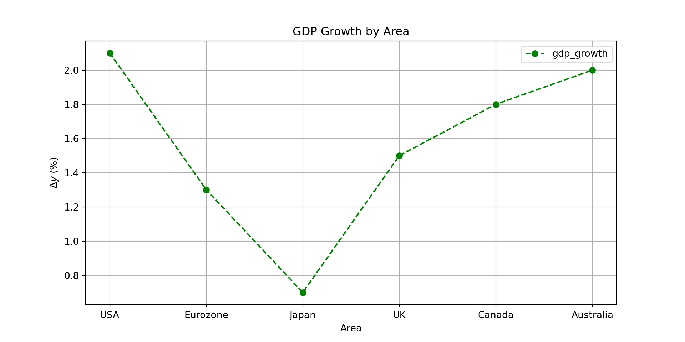
df.inflation.plot(
kind='bar',
title='Inflation Rate by Area',
ylabel='Inflation Rate (%)',
xlabel='Area',
color="orange",
grid=False,
figsize=(10, 5),
legend=False,
edgecolor='black',
linewidth=1.5
)<Axes: title={'center': 'Inflation Rate by Area'}, xlabel='Area', ylabel='Inflation Rate (%)'>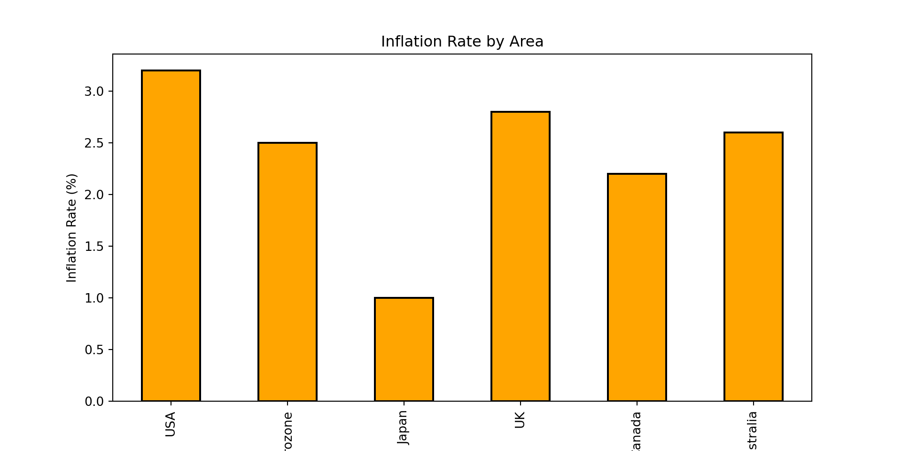
df.plot(
kind="scatter",
x="gdp_growth",
y="gdp_per_capita",
title="GDP Growth vs GDP per Capita",
xlabel="GDP Growth (%)",
ylabel="GDP per Capita ($)",
grid=True,
figsize=(10, 5),
color="blue",
marker="x",
s=100, # Size of the markers
alpha=0.7, # Transparency of the markers
linewidth=1.5 # Edge width of the markers
) <Axes: title={'center': 'GDP Growth vs GDP per Capita'}, xlabel='GDP Growth (%)', ylabel='GDP per Capita ($)'>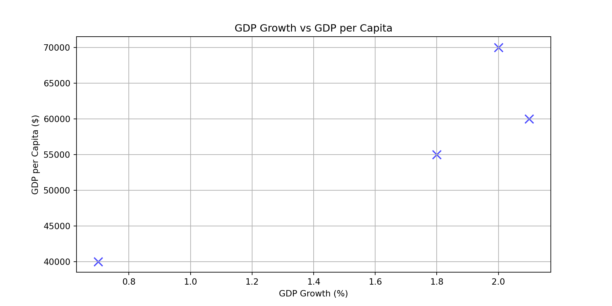
We have seen how to create DataFrames from scratch. However, in practice, we often need to load data from external files or databases. Pandas provides a variety of functions to read and write data in different formats. Data can be imported from CSV, Excel, and more. To read a CSV file into a DataFrame, you can use the pd.read_csv() function.
file_csv ='./data.csv'
data = pd.read_csv(file_csv)To read an Excel file, you can use the pd.read_excel() function.
file_excel = './data.xlsx'
data = pd.read_excel(file_excel, sheet_name='Sheet1')To write a DataFrame to a CSV file, you can use the to_csv() method.
df.to_csv('output.csv', index=False)To write a DataFrame to an Excel file, you can use the to_excel() method.
df.to_excel('output.xlsx', sheet_name='Sheet1', index=False)We will cover these and other data I/O methods in more detail in later sections of the course.
One of the most powerful features of Pandas is the ability to group data by one or more columns and then apply aggregate functions to each group. This is done using the groupby() method, which splits the data into groups based on some criteria, applies a function to each group, and then combines the results.
# Create a sample DataFrame with multiple years
df_multi_year = pd.DataFrame({
"area": ["USA", "USA", "Eurozone", "Eurozone", "Japan", "Japan"],
"year": [2023, 2024, 2023, 2024, 2023, 2024],
"gdp_growth": [2.5, 2.1, 0.9, 1.3, 1.2, 0.7],
"inflation": [4.1, 3.2, 5.4, 2.5, 3.3, 1.0]
})
df_multi_year area year gdp_growth inflation
0 USA 2023 2.5 4.1
1 USA 2024 2.1 3.2
2 Eurozone 2023 0.9 5.4
3 Eurozone 2024 1.3 2.5
4 Japan 2023 1.2 3.3
5 Japan 2024 0.7 1.0To calculate the average GDP growth and inflation for each area across all years:
df_multi_year.groupby("area").mean() year gdp_growth inflation
area
Eurozone 2023.5 1.10 3.95
Japan 2023.5 0.95 2.15
USA 2023.5 2.30 3.65You can also apply multiple aggregation functions at once using agg():
df_multi_year.groupby("area").agg({
"gdp_growth": ["mean", "std"],
"inflation": ["min", "max"]
}) gdp_growth inflation
mean std min max
area
Eurozone 1.10 0.282843 2.5 5.4
Japan 0.95 0.353553 1.0 3.3
USA 2.30 0.282843 3.2 4.1Grouping by multiple columns is also possible:
# Group by both area and whether gdp_growth is above 1%
df_multi_year["high_growth"] = df_multi_year["gdp_growth"] > 1.0
df_multi_year.groupby(["area", "high_growth"])["inflation"].mean()area high_growth
Eurozone False 5.40
True 2.50
Japan False 1.00
True 3.30
USA True 3.65
Name: inflation, dtype: float64The groupby() method is essential for data analysis tasks like computing summary statistics by category, creating pivot tables, and preparing data for visualization.
While Pandas excels at handling data that fits in memory, real-world big data applications often involve datasets too large for a single machine. PySpark is the Python API for Apache Spark, a distributed computing framework that can process massive datasets across clusters of computers. PySpark DataFrames offer a similar interface to Pandas but distribute computations across many machines. For the purposes of this course, we will focus on Pandas, but it’s worth noting that many concepts learned here can be transferred to PySpark when working with big data.
Matplotlib is Python’s primary library for creating static, animated, and interactive visualizations.
The library is built around two core components:
Figure: The top-level container that holds all plot elements. A figure can contain one or more axes.
Axes: The plotting area where data is displayed. Each axes object includes an x-axis and y-axis (plus z-axis for 3D plots) and provides methods for plotting data points.
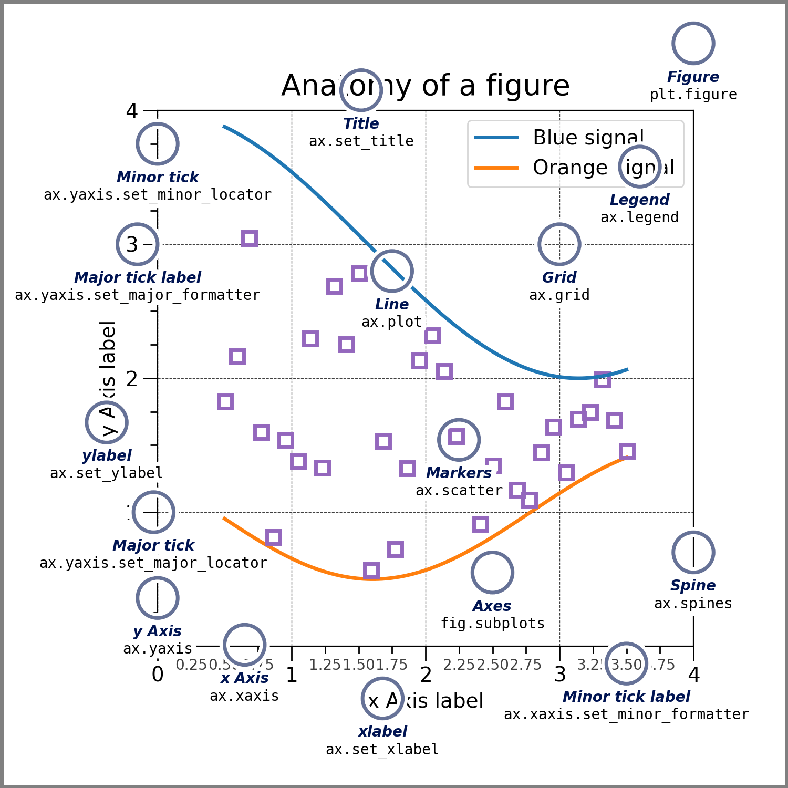
Documentation for these packages is available at https://matplotlib.org/stable/ and https://seaborn.pydata.org/api.html.
We can import Matplotlib as follows
import matplotlib.pyplot as pltSeaborn is built on top of Matplotlib and provides a high-level interface for drawing attractive and informative statistical graphics. We can import Seaborn as follows
import seaborn as snsFor some examples, we won’t need seaborn, but we are importing it here because it has some built-in datasets that we can use for visualization. Let’s load one of these datasets:
# Load the 'tips' dataset from seaborn
df = sns.load_dataset('tips')
df.head() total_bill tip sex smoker day time size
0 16.99 1.01 Female No Sun Dinner 2
1 10.34 1.66 Male No Sun Dinner 3
2 21.01 3.50 Male No Sun Dinner 3
3 23.68 3.31 Male No Sun Dinner 2
4 24.59 3.61 Female No Sun Dinner 4We have loaded a dataset that contains information about tips received by waitstaff in a restaurant, including total bill amount, tip amount, gender of the payer, whether they are a smoker, day of the week, time of day, and size of the party.
We have already seen how to create simple plots using Pandas. For example, we can create a scatter plot of total bill vs. tip using Pandas’ built-in plotting capabilities (which uses Matplotlib under the hood)
df.plot.scatter(x='total_bill', y='tip', title='Total Bill vs Tip', xlabel='Total Bill', ylabel='Tip Amount')<Axes: title={'center': 'Total Bill vs Tip'}, xlabel='Total Bill', ylabel='Tip Amount'>plt.show()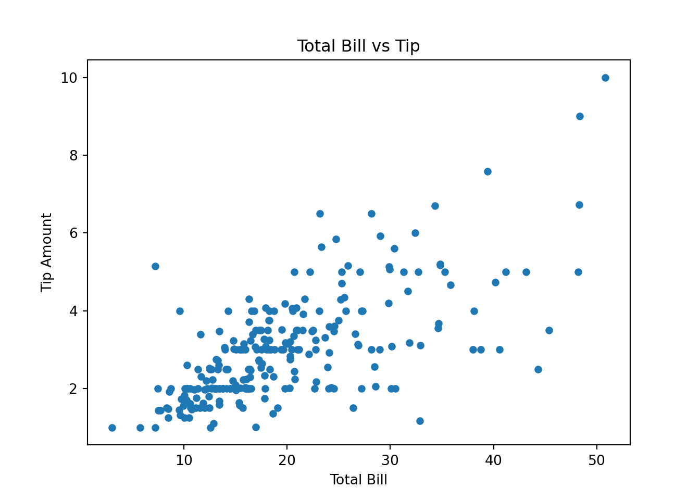
Oftentimes, this is enough for making a quick plot. We can use Matplotlib directly
plt.figure(figsize=(8, 6))<Figure size 800x600 with 0 Axes>plt.scatter(df['total_bill'], df['tip'], color='blue')<matplotlib.collections.PathCollection object at 0x12a96ead0>plt.title('Total Bill vs Tip')Text(0.5, 1.0, 'Total Bill vs Tip')plt.xlabel('Total Bill')Text(0.5, 0, 'Total Bill')plt.ylabel('Tip Amount')Text(0, 0.5, 'Tip Amount')plt.grid(True)
plt.show()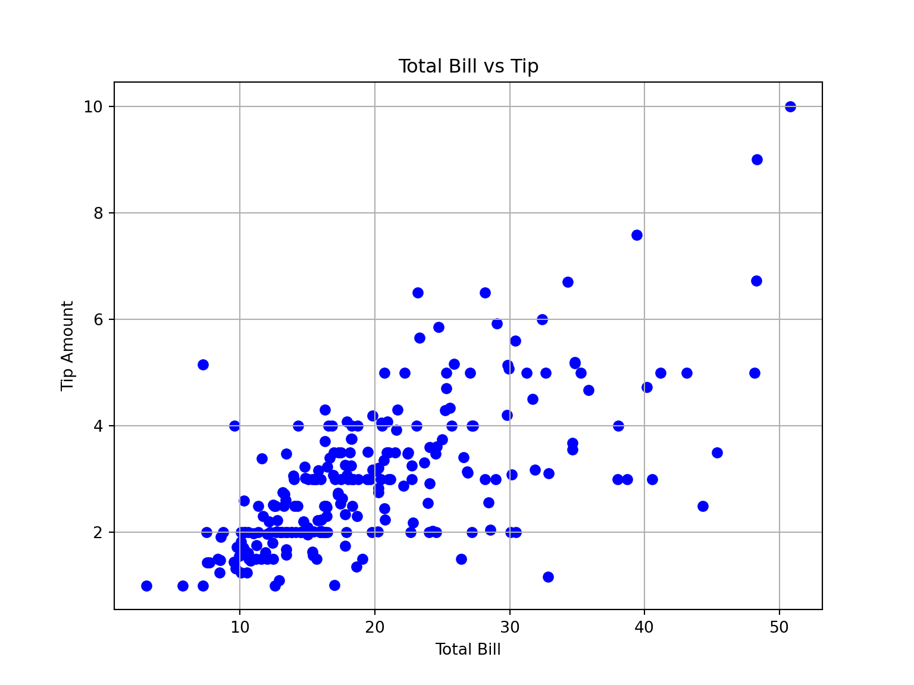
To save a figure to a file, use plt.savefig('filename.png'). You can specify different formats (e.g., .pdf, .svg, .jpg) and adjust the resolution with the dpi parameter (e.g., plt.savefig('figure.png', dpi=300)). In Jupyter notebooks, call savefig() before plt.show(), as show() may clear the figure.
Suppose we want to create a scatter plot that distinguishes between smokers and non-smokers using different colors. We can do this by creating two separate scatter plots and adding them to the same axes
plt.figure(figsize=(8, 6))<Figure size 800x600 with 0 Axes>smokers = df[df['smoker'] == 'Yes']
non_smokers = df[df['smoker'] == 'No']
plt.scatter(smokers['total_bill'], smokers['tip'], color='red', label='Smokers')<matplotlib.collections.PathCollection object at 0x12a93ead0>plt.scatter(non_smokers['total_bill'], non_smokers['tip'], color='blue', label='Non-Smokers')<matplotlib.collections.PathCollection object at 0x12a93ec10>plt.title('Total Bill vs Tip by Smoking Status')Text(0.5, 1.0, 'Total Bill vs Tip by Smoking Status')plt.xlabel('Total Bill')Text(0.5, 0, 'Total Bill')plt.ylabel('Tip Amount')Text(0, 0.5, 'Tip Amount')plt.legend()<matplotlib.legend.Legend object at 0x12a93ed50>plt.grid(True)
plt.show()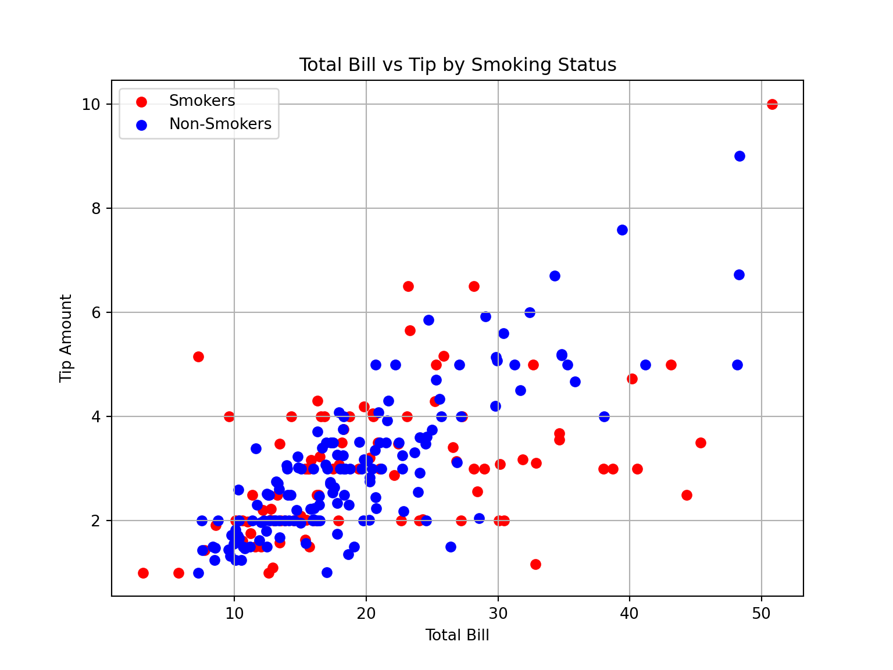
We can also create multiple subplots within a single figure using Matplotlib’s subplots function
fig, axes = plt.subplots(1, 2, figsize=(14, 6))
axes[0].scatter(smokers['total_bill'], smokers['tip'], color='red')<matplotlib.collections.PathCollection object at 0x12aa542d0>axes[0].set_title('Smokers')Text(0.5, 1.0, 'Smokers')axes[0].set_xlabel('Total Bill')Text(0.5, 0, 'Total Bill')axes[0].set_ylabel('Tip Amount')Text(0, 0.5, 'Tip Amount')axes[1].scatter(non_smokers['total_bill'], non_smokers['tip'], color='blue')<matplotlib.collections.PathCollection object at 0x12aa54410>axes[1].set_title('Non-Smokers')Text(0.5, 1.0, 'Non-Smokers')axes[1].set_xlabel('Total Bill')Text(0.5, 0, 'Total Bill')axes[1].set_ylabel('Tip Amount')Text(0, 0.5, 'Tip Amount')plt.suptitle('Total Bill vs Tip by Smoking Status')Text(0.5, 0.98, 'Total Bill vs Tip by Smoking Status')plt.show()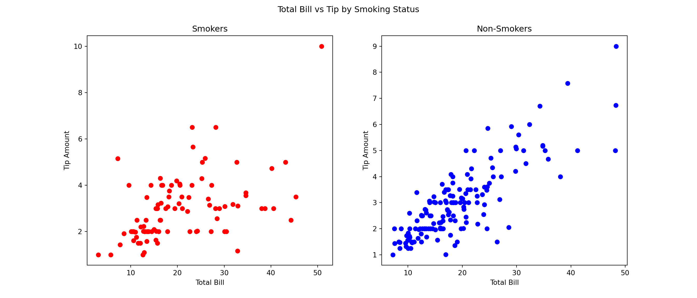
Seaborn provides a higher-level interface for creating attractive and informative statistical graphics. For example, we can create scatter plots distinguishing between different categories using the relplot function
sns.relplot(data=df, x="total_bill", y="tip", hue="time", col="day", col_wrap=2)<seaborn.axisgrid.FacetGrid object at 0x12a753380>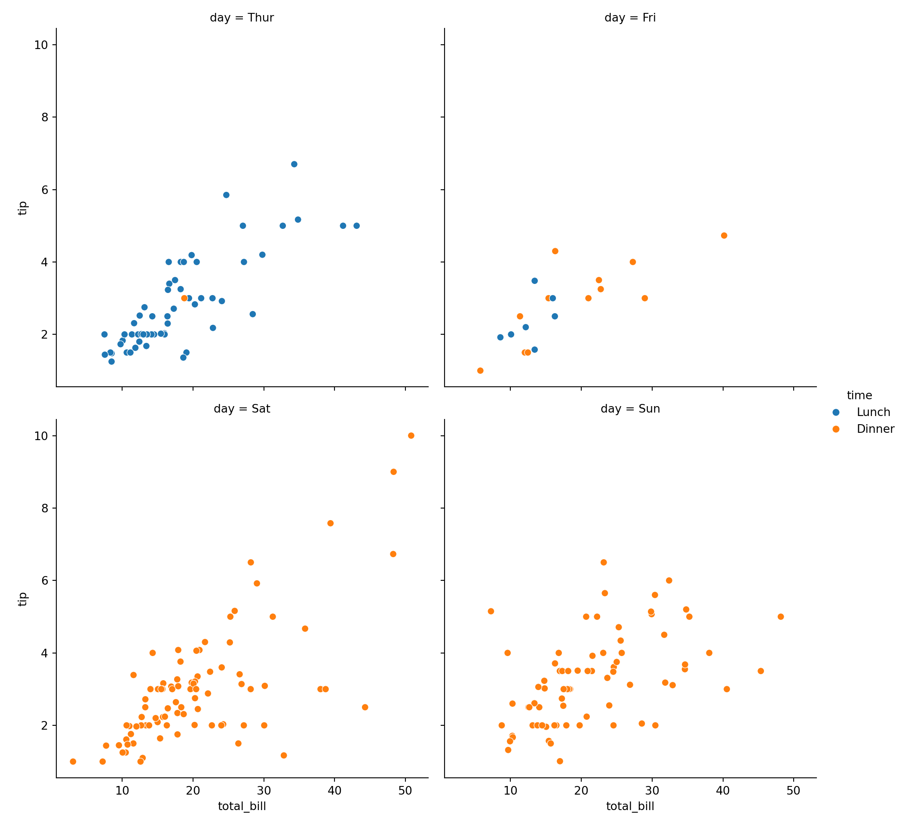
where each subplot corresponds to a different day of the week, and points are colored based on whether the meal was lunch or dinner. We could have created the same plot using Matplotlib, but it would have required more code.
We can also create other types of plots using Seaborn, such as box plots to visualize the distribution of tips by day of the week
sns.boxplot(x='day', y='tip', data=df)<Axes: xlabel='day', ylabel='tip'>plt.title('Tip Distribution by Day of the Week')Text(0.5, 1.0, 'Tip Distribution by Day of the Week')plt.show()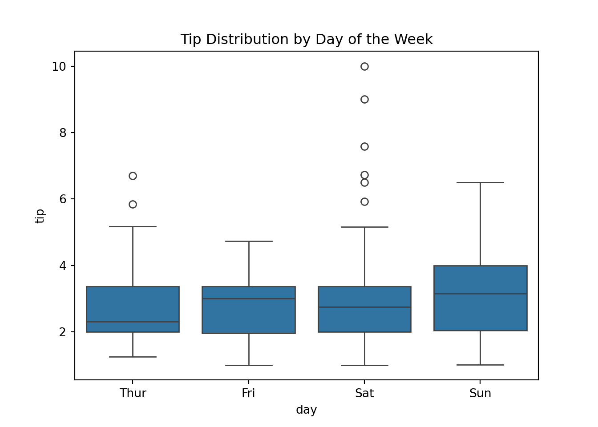
As you can see, on Saturdays there are some very high tips compared to other days but the median tip on Fridays and Sundays still seems to be higher.
We can also create histograms to visualize the distribution of total bills
sns.histplot(df['total_bill'], bins=20, kde=True)<Axes: xlabel='total_bill', ylabel='Count'>plt.title('Distribution of Total Bills')Text(0.5, 1.0, 'Distribution of Total Bills')plt.xlabel('Total Bill')Text(0.5, 0, 'Total Bill')plt.ylabel('Frequency')Text(0, 0.5, 'Frequency')plt.show()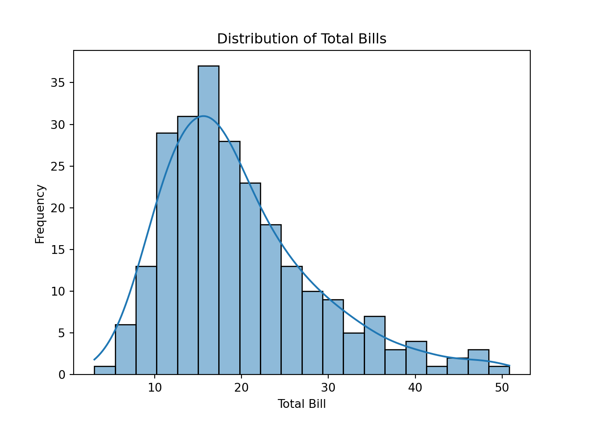
where the kde=True argument adds a kernel density estimate to the histogram, providing a smoothed curve that represents the distribution of total bills.
We can also create regression plots to visualize the relationship between total bill and tip amount
sns.lmplot(x='total_bill', y='tip', data=df, hue='smoker', markers=['o', 'x'])<seaborn.axisgrid.FacetGrid object at 0x12ad10b90>plt.title('Total Bill vs Tip with Regression Lines')Text(0.5, 1.0, 'Total Bill vs Tip with Regression Lines')plt.show()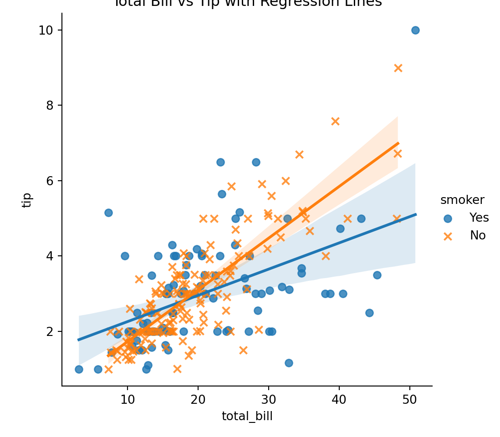
which includes regression lines for smokers and non-smokers.
There are many more types of plots and customization options available in both Matplotlib and Seaborn. These libraries are powerful tools for data visualization in Python, and mastering them will greatly enhance your ability to communicate insights from data effectively. I recommend exploring their documentation and experimenting with different types of plots to become more familiar with their capabilities.
Application Programming Interfaces (APIs) are a set of rules and protocols that allow different software applications to communicate with each other. They enable developers to access data and functionality from external services, libraries, or platforms without needing to understand the underlying code or infrastructure. Rather than downloading data files manually, APIs allow us to programmatically request and retrieve data directly from a web service.
In this section, we will have a brief look at how to use some common APIs for economic data retrieval using Python. We will cover the following:
These APIs provide access to a wide range of economic and financial data, including interest rates, exchange rates, inflation rates, GDP figures, and more. By using these APIs, we can automate the process of data retrieval, ensuring that we always have access to the most up-to-date information for our analyses. I highly recommend that you make use of APIs whenever possible to streamline your data collection process.
Banco de España’s Statistics Web Service provides a way to programmatically retrieve data from the Banco de España’s databases including data from BIEST. Since Banco de España does not provide an official Python package to access their API, we can use the requests library to make HTTP requests and retrieve data in JSON (JavaScript Object Notation) format. We can then parse the JSON data and convert it into a Pandas DataFrame for further analysis.
To this end, we first import the necessary libraries
import requests
import pandas as pdNext, we define a class to interact with the Banco de España API1
class BancoDeEspanaAPI:
def __init__(self, language='en'):
self.language = language
def request(self, url):
response = requests.get(url)
return response.json()
def get_series(self, series, time_range='MAX'):
# Prepare the series parameter
if isinstance(series, list):
series_list = ','.join(series)
else:
series_list = series
# Download the data for the specified series
url = f"https://app.bde.es/bierest/resources/srdatosapp/listaSeries?idioma={self.language}&series={series_list}&rango={time_range}"
json_response = self.request(url)
# Initialize an empty dataframe to store the results
df = pd.DataFrame()
# Go over each series in the response and extract the data
for series_data in json_response:
# Extract series name, dates, and values
series_name = series_data['serie']
dates = series_data['fechas']
values = series_data['valores']
# Add the data to the dataframe
df[series_name] = pd.Series(data=values, index=pd.to_datetime(dates).date)
# Sort the dataframe by index (date)
df = df.sort_index()
return dfWe can then create an instance of the BancoDeEspanaAPI class and use its methods to retrieve data. For example, to get the latest data for a specific series, we can use the get_series() method
bde = BancoDeEspanaAPI()
df = bde.get_series(['DTNPDE2010_P0000P_PS_APU', 'DTNSEC2010_S0000P_APU_SUMAMOVIL'])Now, the requested series are in the DataFrame df and we can manipulate or analyze them as needed. For example, we can display the retrieved data
df.tail() DTNPDE2010_P0000P_PS_APU DTNSEC2010_S0000P_APU_SUMAMOVIL
2024-07-01 104.2 -2.8
2024-10-01 101.6 -3.2
2025-01-01 103.4 -3.2
2025-04-01 103.5 -3.2
2025-07-01 103.2 -2.9or plot it
df.plot()<Axes: >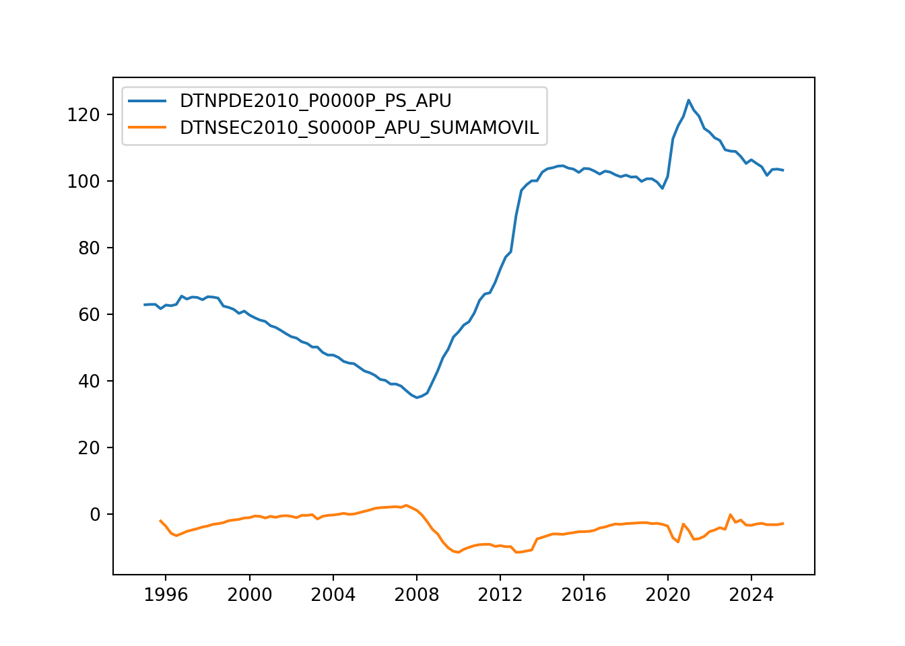
This is a very basic implementation of how to interact with the Banco de España API using Python. You can extend this class to include more functionality, such as handling different data formats, error handling, and more advanced data processing as needed. To get the series keys for the data you want to retrieve, you can use the BIEST tool provided by Banco de España.
The ECB Data Portal provides access to a wide range of economic and financial data from the European Central Bank. Similar to Banco de España, the ECB does not provide an official Python package for their API. However, the ECB follows the SDMX standard for data exchange, which allows us to retrieve data in a structured format. We can use the sdmx library in Python to interact with the ECB API and retrieve data.
First, we import the necessary libraries
import sdmx
import pandas as pdThen, we initialize a connection to the ECB API
ecb = sdmx.Client("ECB")Suppose we want to retrieve the HICP inflation rate for Spain from January 2019 to June 2019. This series has the following key: ICP.M.ES.N.000000.4.ANR.
To download it we need to specify the appropriate parameters and make a request to the ECB API
key = 'M.ES.N.000000.4.ANR' # Need key without the 'ICP.' prefix
params = dict(startPeriod="2019-01", endPeriod="2019-06") # This is optional
data = ecb.data("ICP", key=key, params=params).data[0] # ICP prefix needs to be specified here
df = sdmx.to_pandas(data).to_frame()Now, the requested data is in the DataFrame df and we can manipulate or analyze it as needed. For example, we can display the retrieved data
df.tail() value
TIME_PERIOD FREQ REF_AREA ADJUSTMENT ICP_ITEM STS_INSTITUTION ICP_SUFFIX
2019-02 M ES N 000000 4 ANR 1.1
2019-03 M ES N 000000 4 ANR 1.3
2019-04 M ES N 000000 4 ANR 1.6
2019-05 M ES N 000000 4 ANR 0.9
2019-06 M ES N 000000 4 ANR 0.6Note that this is a multi-index DataFrame. We can reset the index to make it easier to work with
df = df.reset_index()
df = df.set_index('TIME_PERIOD')
df = df.loc[:, ['value']]
df = df.rename(columns={'value': 'inflation_rate'})We can plot the data as usual
df.plot()<Axes: xlabel='TIME_PERIOD'>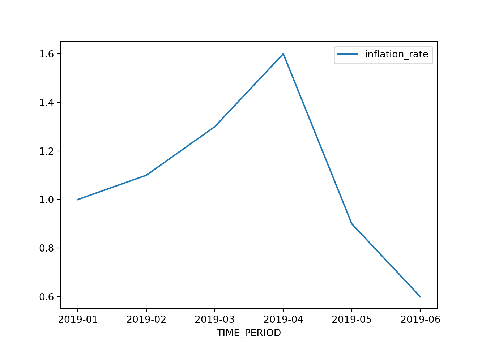
These are just basic examples of how to interact with the ECB API using Python. The sdmx library supports many more features.
The SDMX standard is used by various international organizations for data exchange. Some other notable SDMX APIs include:
You can find a list of SDMX data providers implemented in the sdmx package here. To use them in the code above you simply need to replace 'ECB' with the appropriate provider name.
The Fred API by the Federal Reserve Bank of St. Louis provides access to a vast amount of economic data, including interest rates, inflation rates, GDP figures, and more. To use the Fred API, we need to sign up for an API key on the Fred website. Once we have the API key, we can use the pyfredapi library in Python to interact with the Fred API and retrieve data.
The Fred API works a little differently from the previous two APIs we have seen since it requires an API key for authentication. You can sign up for a free API key on the Fred website. Note that these keys are personal and should not be shared publicly. For this reason, the key is not included directly in the code examples below. Instead, you should follow the instructions in the pyfredapi documentation to set up your API key securely.
Once we have set the API key, we import the necessary libraries
import pyfredapi as pfThen, we can download the series for GDP (series ID: GDP) as follows
df = pf.get_series('GDP') # Note that you can provide the API key manually by adding the parameter api_key='YOUR_API_KEY' if you have not set it up as an environment variableWe can then display the retrieved data
df.tail() realtime_start realtime_end date value
315 2026-03-13 2026-03-13 2024-10-01 29825.182
316 2026-03-13 2026-03-13 2025-01-01 30042.113
317 2026-03-13 2026-03-13 2025-04-01 30485.729
318 2026-03-13 2026-03-13 2025-07-01 31098.027
319 2026-03-13 2026-03-13 2025-10-01 31442.483Cleaning up the DataFrame a bit
df = df.rename(columns={'value': 'gdp'}) # Rename the 'value' column to 'gdp'
df['date'] = pd.to_datetime(df['date']) # Convert the 'date' column to datetime format
df = df.set_index('date') # Set the 'date' column as the index
df = df.loc[:, ['gdp']] # Keep only the 'gdp' columnNow it looks better
df.tail() gdp
date
2024-10-01 29825.182
2025-01-01 30042.113
2025-04-01 30485.729
2025-07-01 31098.027
2025-10-01 31442.483and to plot it, we can simply do
df.plot()<Axes: xlabel='date'>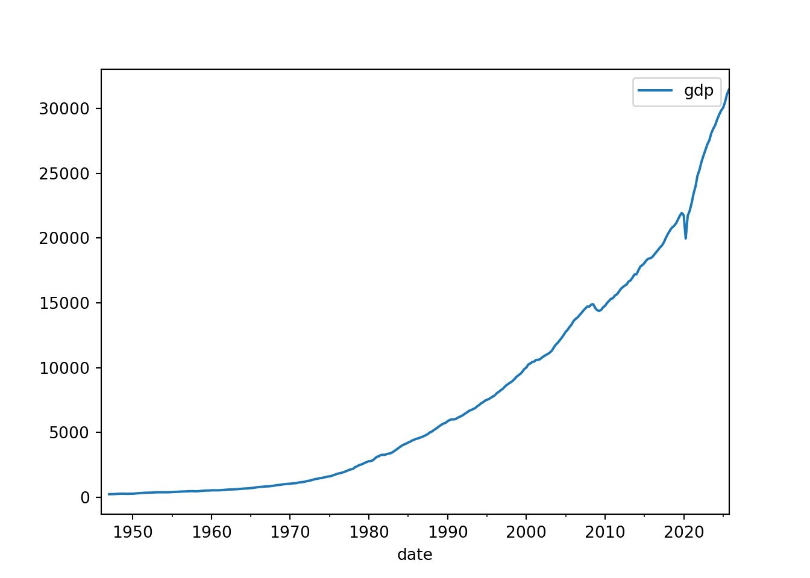
To see all the functionality provided by the pyfredapi library, please refer to the official documentation.
As you develop your Python programming skills, adopting good practices early will save you countless hours of frustration and make your code more maintainable, reproducible, and professional. This section covers essential practices that every Python programmer should follow, with particular emphasis on version control and virtual environments—two foundational tools that are often overlooked by beginners but are indispensable in professional settings. Due to their importance, we will briefly cover them here. However, we do not have the time to go into great detail in this course. Therefore, I encourage you to explore these topics further on your own.
Version control is perhaps the single most important practice for any programmer. It allows you to track changes to your code over time, collaborate with others, recover from mistakes, and maintain a complete history of your project’s evolution. Git is the dominant version control system used in both academia and industry, and GitHub is the most popular platform for hosting Git repositories.
Think of Git as a sophisticated “undo” system for your entire project. Every time you make a commit, you create a snapshot of your project that you can return to at any time. This means you can experiment fearlessly—if your new approach doesn’t work, you can simply revert to a previous state. Beyond this safety net, Git enables powerful collaboration workflows: multiple people can work on the same codebase simultaneously, with Git helping to merge their changes intelligently.
For academic research and data science projects, version control is equally crucial. It provides a complete audit trail of your analysis, which is essential for reproducibility. When someone asks about a result from six months ago, you can check out the exact code that produced it. When you discover an error, you can trace back to when it was introduced.
To get started with Git for your Python projects, you’ll want to follow a basic workflow. First, initialize a Git repository in your project folder using git init. As you work, periodically stage your changes with git add and commit them with meaningful messages using git commit -m "Description of changes". Push your commits to a remote repository on GitHub to back up your work and enable collaboration. A typical Git workflow looks like this:
# Initialize a new Git repository
git init
# Add files to staging area
git add script.py
# Commit changes with a descriptive message
git commit -m "Add data preprocessing function"
# Push to GitHub (after setting up remote)
git push origin mainThese commands are meant to be run in your terminal or command prompt within your project directory. There are many graphical user interfaces (GUIs) and IDE integrations (like in VSCode) that can simplify these tasks if you prefer not to use the command line.
Some best practices for using Git include committing frequently with small, logical changes rather than massive commits that touch many files; writing clear commit messages that explain why you made the change, not just what changed; and using a .gitignore file to exclude data files, output files, and environment-specific files from version control. You should version control your code and configuration files, but avoid committing large datasets, model weights, or generated outputs—these should be stored separately or regenerated from your code.
Many cloud platforms like GitHub offer additional features beyond basic version control. Issues help track bugs and feature requests, pull requests facilitate code review before merging changes, and GitHub Actions can automate testing and deployment.
Virtual environments are isolated Python installations that allow you to maintain different sets of packages for different projects. This solves a critical problem: different projects often require different versions of the same library. Without virtual environments, you’d be forced to use a single global installation of each package, which can lead to version conflicts and “it works on my machine” problems.
Consider a practical scenario: you’re working on an older data analysis project that requires NumPy 1.20, but a new machine learning project needs NumPy 1.24 for compatibility with the latest PyTorch. Without virtual environments, you’d have to constantly uninstall and reinstall NumPy depending on which project you’re working on. Virtual environments solve this elegantly by creating separate Python installations for each project, each with its own package versions.
Beyond avoiding conflicts, virtual environments make your projects reproducible. When you share your code with others or run it on a different machine, you need a way to specify exactly which package versions it requires. By creating an environment file (like environment.yml for conda or requirements.txt for pip), you provide a recipe that others can use to recreate your exact setup. This is essential for reproducible research and collaborative projects.
There are several different tools for managing virtual environments in Python. Two commonly used ones are conda and venv. Conda, which comes with Anaconda and Miniconda, is particularly popular in data science because it can manage both Python packages and system-level dependencies. It’s especially useful when you need packages that require compiled code, like NumPy or PyTorch. The built-in venv module creates lighter-weight environments but only manages Python packages, requiring you to handle system dependencies separately.
In this course, we used conda to manage virtual environments. To create a virtual environment for a project, you would use:
# Create a new environment named 'myproject' with Python 3.11
conda create -n myproject python=3.11
# Activate the environment
conda activate myproject
# Install packages in the activated environment
conda install numpy pandas matplotlib
# Export environment to a file for reproducibility
conda env export > environment.yml
# Create environment from file on another machine
conda env create -f environment.ymlOnce you’ve activated an environment, any packages you install or Python scripts you run will use that environment’s isolated installation. When you’re done working, you can deactivate it with conda deactivate. This workflow keeps each project’s dependencies cleanly separated.
A good practice is to create a fresh virtual environment at the start of each new project and document its dependencies in an environment.yml file. Keep this file in your Git repository so others can recreate your setup. Update the file whenever you add new packages to your project. When sharing your code, include instructions for setting up the environment—this is often just a single command: conda env create -f environment.yml.
The combination of Git and virtual environments forms a foundation for reproducible computational work. Git tracks your code changes, while virtual environments ensure your code runs consistently across different machines and over time. Together, they transform ad-hoc scripts into professional, maintainable projects that you and others can build upon.
Well-organized and documented code is easier to understand, maintain, and debug. As your projects grow beyond simple scripts, good organization becomes essential. Break your code into logical functions and modules rather than writing everything in a single long script. Each function should do one thing well and have a clear, descriptive name. Use docstrings to document what each function does, what parameters it expects, and what it returns.
Python docstrings are enclosed in triple quotes and appear immediately after a function definition. A good docstring explains the purpose of the function, describes parameters and return values, and may include usage examples. Here’s a well-documented function:
def calculate_portfolio_return(weights, returns):
"""
Calculate the expected return of a portfolio.
Parameters
----------
weights : array-like
Portfolio weights for each asset (should sum to 1)
returns : array-like
Expected returns for each asset
Returns
-------
float
Expected portfolio return
Examples
--------
>>> weights = np.array([0.6, 0.4])
>>> returns = np.array([0.10, 0.15])
>>> calculate_portfolio_return(weights, returns)
0.12
"""
return np.dot(weights, returns)For larger projects, organize your code into modules (separate .py files) grouped by functionality. Use meaningful file and variable names—data_preprocessing.py is much clearer than utils.py, and interest_rate is better than x. Follow the PEP 8 style guide for Python code, which covers naming conventions, indentation, and other formatting guidelines.
Errors are an inevitable part of programming. Learning to handle them gracefully and debug effectively will make you a much more productive programmer. Python uses exceptions to signal errors. Rather than letting your program crash, you can catch exceptions and handle them appropriately using try-except blocks:
try:
df = pd.read_csv('data.csv')
except FileNotFoundError:
print("Error: data.csv not found. Please check the file path.")
df = NoneWhen debugging, you can use print statements strategically to understand what’s happening in your code, use Python’s built-in debugger (pdb) or VSCode’s debugging features for more complex issues. The VSCode debugger lets you set breakpoints, step through code line by line, and inspect variable values—invaluable for tracking down subtle bugs.
Don’t be discouraged when you encounter errors. Reading error messages carefully is a crucial skill—Python’s error messages usually tell you exactly what went wrong and where. The traceback shows the sequence of function calls that led to the error, with the actual error at the bottom. Learning to parse these messages will help you fix issues quickly.
Modern AI tools like GitHub Copilot and Claude Code can significantly accelerate your coding, especially when you’re learning. These tools can help you write boilerplate code, explain unfamiliar syntax, suggest solutions to common problems, and even debug errors. However, use them thoughtfully—treat them as helpful assistants, not replacements for understanding.
When using AI coding assistants, always read and understand the suggested code before using it. Don’t blindly copy-paste without comprehension. These tools can make mistakes or suggest suboptimal solutions, so critical evaluation is essential. Use them to learn: if an AI suggests an unfamiliar approach, research why it works and when it’s appropriate. Over time, you’ll develop intuition for when AI suggestions are helpful versus when you need to think more carefully about the problem.
AI tools are particularly useful for learning new libraries or APIs, generating test cases, refactoring code, and getting past “blank page” syndrome when starting a new function. They’re less reliable for complex algorithmic problems or domain-specific logic that requires deep understanding. Like any tool, they become more valuable as you learn to use them effectively.
Note that creating the class is not strictly necessary, but it helps to organize the code.↩︎